التحدي المتمثل في مطابقة التنوع الملحوظ لأنماط الوفرة الكيميائية في عمليات المحاكاة الهيدروديناميكية الكونية
الملخص
مع ظهور المسوحات الطيفية الكبيرة، زادت كمية البيانات الكيميائية-الديناميكية عالية الجودة في درب التبانة (MW) بشكل كبير. يعد التقاط الميزات التفصيلية في بيانات الرصد عالية الجودة وشرحها بدقة وبشكل صحيح أمرًا صعبًا للغاية بالنسبة للنماذج الرقمية الحديثة. ومن أجل مواكبة كمية ونوعية مجموعات بيانات الرصد، يجب دمج الوصفات المحسنة للتطور الكيميائي المجري في عمليات المحاكاة. نقدم هنا نموذجًا جديدًا ومرنًا للتخصيب الكيميائي للمحاكاة الكونية. يسمح نموذجنا بتغيير عدد من معلمات الفيزياء النجمية بسهولة، مثل شكل دالة الكتلة الأولية (IMF)، أو عمر النجوم، أو المردودات الكيميائية، أو أوقات التأخير SN Ia. نحن ننفذ نموذجنا في الكود Gasoline2 ونجري سلسلة من عمليات المحاكاة الكونية التي تتنوع بين عدد من المعلمات الرئيسية، وأهمها تقييم مجموعات المردودات النجمية المختلفة للنجوم الضخمة من الأدبيات. لقد وجدنا أن إجمالي المعادن وإجمالي وفرة الحديد ووفرة الأكسجين في مرحلة الغاز هي تنبؤات قوية من مجموعات مردودات مختلفة وتتفق مع علاقات المراقبة. من ناحية أخرى، تُظهر وفرة العناصر الفردية، وخاصة عناصر اختلافات كبيرة عبر مجموعات مردودات مختلفة ولا يمكن لأي من نماذجنا أن يتطابق في نفس الوقت مع القيود الموجودة على مقياس الكتلة القزم وMW. وهذا يوفر طريقة فريدة لتقييد معلمات النموذج بشكل ملحوظ. بالنسبة للمجرات ذات كتلة MW نجد في معظم جداول المردودات التي تم اختبارها في هذا العمل نمطًا ثنائيًا في /Fe] مقابل مستوى [Fe/H] ذي التشتت الجوهري المنخفض إلى حد ما والذي يحتمل أن يكون متوترًا مع تشتت الوفرة المرصودة.
keywords:
المجرة: البنية — المجرات: التطور — المجرات: وفرة — المجرات: — التكوين — المجرة : الكثرة — الطرق : عددية1 المقدمة
المجرات هي المنارات الموجودة في محيط الكون الشاسع (Mo2010). هيكلها ومظهرها هو نتيجة التفاعل بين عدة أجيال من النجوم التي تتشكل من خلال فترات مختلفة من تراكم الغاز وطرده. ولذلك فإن الهياكل المجرية تشفر معلومات قيمة حول العمليات الفيزيائية الأساسية التي تحكم تكوين المجرات. على وجه الخصوص، وفرة العناصر الكيميائية في النجوم، والوسط بين النجمي (ISM) والوسط المحيط بالمجرة (CGM) بمثابة تتبع مثالي لتاريخ المجرة المتكامل.
إن التنوع الملحوظ للعناصر الكيميائية ذات الأعداد الذرية الأكبر أو المساوية لـ C هو نتيجة التخليق النووي النجمي وتوزيع تلك العناصر في الكون نتيجة لطرد الغاز من مناطق تشكل النجوم والمجرات عبر عمليات يطلق عليها اسم التغذية الراجعة (مثلًا Maiolino2019). تعتبر هذه العناصر الكيميائية أدوات تتبع رصدية مثالية لتحديد الحالة التطورية للنجوم أو الظروف الفيزيائية مثل الكثافة أو درجة الحرارة أو حالة التأين للغاز. كما أنها تساهم بشكل مهم في ديناميكيات النظام بأكمله كمبردات رئيسية تمكن من تبديد الطاقة عن طريق انبعاث الإشعاع. وهكذا يتم إنتاج وتطور العناصر الثقيلة أحد المكونات الأساسية للنماذج الحديثة لتكوين وتطور كل من النجوم والمجرات (مثلًا Vogelsberger2020).
يعتمد عمر النجوم وإنتاج عناصر كيميائية جديدة (المشار إليها في هذه المقالة بالمعادن) بشدة على كتلة النجم وتركيبه الكيميائي. عندما يتطور جيل من النجوم، فإنه سيلوث ISM بالعناصر الكيميائية المندمجة في قلوبها، في الغالب خلال المراحل التطورية الأخيرة. ونتيجة لذلك، فإن الأجيال المتعاقبة من النجوم المولودة من ISM المخصب سوف تحصل على نسبة كتلة أكبر من العناصر الثقيلة مقارنة بأسلافها. وبالتالي فإن التطور الكيميائي لا يستمر بطريقة خطية بسبب الاعتماد الشامل القوي للجداول الزمنية لتطور النجوم. على سبيل المثال، النجوم العالية الكتلة تتطور بسرعة أكبر بكثير مقارنة بالنجوم ذات الكتلة المنخفضة والمتوسطة ( Myr لنجم و Gyr لنجم ).
لذلك، تقوم النجوم الأعلى كتلة أولاً بإثراء ISM بالعناصر الكيميائية الثقيلة بينما تقوم النجوم ذات الكتلة المتوسطة والمنخفضة باحتجاز العناصر الكيميائية المنتجة في الأجيال السابقة لأوقات أطول بكثير ((حتى Gyr, مثلًا Marigo2001; Thielemann2003)) مع النتيجة المباشرة المتمثلة في أن الخصائص الكيميائية لنجوم الجيل الثاني ستتأثر بشكل أساسي بالنجوم الضخمة المحتضرة. وبالتالي، فإن تضمين تكوين (الوقت المحدد) وتوزيع وتبادل وإعادة تدوير العناصر الكيميائية في أي محاكاة لتكوين وتطور المجرات أمر بالغ الأهمية لفهمنا.
منذ التنفيذ الأول للتخصيب الكيميائي عن طريق إطلاق الفلزية من المستعرات العظمى لانهيار اللب (CC-SN) إلى هيدروديناميكا الجسيمات الملساء (SPH) رمز (Steinmetz1994)، تم إحراز تقدم كبير في نمذجة التطور الكيميائي المجري (مثلًا Raiteri1996; Recchi2001; Mosconi2001; Kawata2001; Lia2002; Tornatore2007; Oppenheimer2008; Hirschmann2016). يوجد الآن العديد من النماذج التي تميز بين العناصر الناشئة من SN Ia وCC-SN وفي بعض الحالات أيضًا من نجوم الفرع العملاق المقارب (AGB) والرياح من أسلافها (مثلًا Scannapieco2005; Wiersma2009; Naiman2018).
بالإضافة إلى ذلك، تم إحراز تقدم كبير في جمع بيانات الرصد عالية الجودة ويمكن إنشاء علاقة بين أنماط الوفرة المرصودة للعناصر الكيميائية في النجوم وISM مع كتلة المجرة، والموقع داخل المجرة وعصر ولادة النجوم (مثلًا Baade1944; Wallerstein1962; Hayden2015). علاوة على ذلك، توجد ثروة كبيرة من البيانات الخاصة بالوفرة الكيميائية لـ CGM عند الانزياح الأحمر المنخفض والعالي. ولكن على الأخص مع ظهور المسوحات الطيفية الكبيرة، زادت كمية البيانات الكيميائية-الديناميكية عالية الجودة في درب التبانة (MW) بشكل كبير (Boeche2011; Anders2014; Buder2019; Xiang2019; Steinmetz2020) مما يدل على أنماط وفرة كيميائية متميزة للقرص النجمي (مثلًا Boeche2013; Hayden2015). نظرًا لأنه من المفترض أن تعكس الوفرة السطحية للنجوم التركيب الكيميائي لسحابة غاز ولادة النجم، فإن الوفرة الكيميائية المقاسة تقدم سجلًا أحفوريًا لتاريخ تكوين المجرة. إن دراسة الهياكل الكيميائية الحركية لـ MW مع الأعمار النجمية المستنتجة ((Bensby2014; Martig2016; Feuillet2016; Mackereth2017; Ness2019)) مكنت مجال الآثار المجرية ((Freeman2002)) وأدت إلى رؤى فريدة حول تكوين وتطور القرص النجمي ((مثلًا Minchev2013; Sestito2021)).
يعد التقاط الميزات التفصيلية الموجودة في بيانات الرصد وشرحها بدقة أمرًا صعبًا للغاية، لكن النماذج الرقمية الحديثة تبدأ في إعادة إنتاج الميزات المرصودة (مثلًا Grand2018; Hilmi2020; Khoperskov2020; Agertz2020; Renaud2020). من خلال البناء، تشتمل نماذج التطور الكيميائي على عدد كبير من معلمات الفيزياء النجمية مثل شكل دالة الكتلة الأولية (IMF)، أو عمر النجوم أو المردودات الكيميائية أو أوقات التأخير SN Ia. العديد من هذه المعلمات مقيدة بشكل سيئ من قبل (Cote2016) وتم اختيارها خصيصًا. في الآونة الأخيرة، قام Gutcke2019 على سبيل المثال بدراسة تأثير ميل الكتلة العالية المعتمد على الفلزية لـ IMF على أنماط الوفرة المجرية. ولعل أهم المدخلات الخارجية أو النظرية لنماذج التطور الكيميائي هي نواتج التخليق النووي لمختلف قنوات التخصيب (Romano2010; Cote2016b). في الماضي، أنتجت النتائج النظرية عدم تطابق مع الملاحظات، ولا تزال أوجه القصور الفيزيائية لنماذج المردودات النووية النجمية قيد المناقشة ((مثلًا Nomoto2013; Pignatari2016; Mueller2016)).
وبالتالي، من أجل التعامل مع مجموعة كبيرة من المعلمات للاستكشاف، تم تطوير نماذج مختلفة للتطور الكيميائي المجري (GCE) (مثلًا Tinsley1979; Chiappini1997; Rybizki2017; Ritter2018b; Kobayashi2020). تتراوح هذه النماذج من النماذج التحليلية ذات الافتراضات المبسطة ((مثلًا Weinberg2017; Spitoni2017; Spitoni2020)) إلى عمليات المحاكاة الهيدروديناميكية بما في ذلك التخصيب الكيميائي التفصيلي بالإضافة إلى ديناميكيات المجرة ((مثلًا Kawata2003; Few2012; Buck2020; Brook2020)). أتاحت جميع هذه النماذج التحليلية اختبار مجموعة كبيرة من المعلمات على نطاق واسع من القيم، وتهميش المعلمات من أجل استنتاجات فيزيائية فلكية بسيطة. ومع ذلك، نظرًا لافتراضاتها المبسطة، تفتقر هذه النماذج إلى إمكانية تضمين جميع الديناميكيات المعقدة الموجودة في عمليات المحاكاة الهيدروديناميكية الكاملة والتي قد تفسر بعض عيوبها كما رأينا في Blancato2019.
نقدم في هذا العمل نهجًا هجينًا جديدًا حيث يتم تقييد معلمات التطور الكيميائي الأساسية أولاً عن طريق تركيب نموذج التطور الكيميائي المجري على بيانات الرصد (Philcox2018) ومن ثم توظيفها في وصفة التخصيب الكيميائي في عمليات المحاكاة الهيدروديناميكية الكونية لتشكيل المجرات من الكتلة القزمة إلى كتلة MW.
تم تنظيم هذه الورقة على النحو التالي: في §2 نقدم تفاصيل نموذج التطور الكيميائي متبوعًا بوصف التنفيذ الجديد للتخصيب الكيميائي في كود المحاكاة الكونية في §3. القراء الذين هم على دراية بمفهوم النماذج التعدادات النجمية البسيطة واستخدامها في عمليات المحاكاة الكونية قد يتخطون هذين القسمين بسهولة. نواصل في §4 تحليل نتائج المحاكاة العددية مع التركيز بشكل خاص على أنماط وفرة الأقراص النجمية في ضوء الدراسات الأثرية المجرية الحالية. ننهي هذه الدراسة بمناقشة وملخص لنتائجنا في §5.
2 المنهجية: نموذج مرن للتطور الكيميائي
لا تزال الموارد الحسابية الحديثة غير قادرة على تمكين عمليات المحاكاة الكونية من تحديد النجوم الفردية. وبدلاً من ذلك، فإن النهج القياسي هو فصل مجال الكثافة النجمية إلى جسيمات تتبع تمثل مجموعة من النجوم. يتم وصف عدد النجوم الموجودة في تلك الجسيمات النجمية بعمر واحد، ، وفلزي، وIMF يحدد عدد النجوم في حاوية كتلة معينة. يُشار عادةً إلى هذه التجمعات النجمية باسم التجمعات النجمية البسيطة (SSP). من أجل تحديد كيفية تفاعل SSP مع ISM المحيط به، يجب على المرء تحديد كمية الطاقة والمعادن والكتلة (التي تم حلها بالوقت) الصادرة عن الجسيم النجمي، والتي يشار إليها عادةً بالتغذية الراجعة النجمية.
هناك العديد من نماذج التطور النجمي في الأدبيات التي تستخدم دوال عمر نجمي مختلفة قليلاً، IMFs أو كسور إرجاع الكتلة الفلزية. بدلاً من اتخاذ قرار بشأن نموذج واحد محدد، نستخدم كود التطور الكيميائي المرن Chempy11 1 يمكن العثور على تطبيق بلغة Python للإصدار الحالي من Chempy على GitHub https://github.com/jan-rybizki/Chempy. (Rybizki2017) من أجل تجميع نموذج التطور النجمي النهائي المستخدم في عمليات المحاكاة. وهذا يعني أننا نستخدم Chempy لإصلاح معلمات SSP لتجميع جداول المردودات لاستخدامها في عملية تشغيل معينة. في العمل المستقبلي، يمكن استخدام Chempy لملاءمة معلمات SSP مع البيانات المرصودة وبالتالي تقييد نماذج SSP المستخدمة في عمليات المحاكاة الهيدروديناميكية22 2 ملاحظة، نستخدم الجزء من Chempy الذي يقوم بحساب إنتاج الفلزية المتكامل IMF لـ SSP. وهذا يعادل SYGMA (Ritter2018b) في تعاون NUPYCEE..
باختصار، Chempy هي أداة للأغراض العامة لربط معلمات نموذج التطور النجمي (الكيميائي) (على سبيل المثال، المنحدر عالي الكتلة IMF و/أو مجموعة مردودات محددة) باحتمالية الملاحظات (مثل الوفرة النجمية) عبر تنبؤاته النموذجية . توجد وصفة تفصيلية لإجراءات النمذجة في ورقة التعليمات البرمجية (Rybizki2017) ولكن من أجل الاكتمال، نصف مبدأ العمل الأساسي لـ Chempy أدناه. نظرًا لأن هدفنا هو استخدام Chempy لإنشاء نموذج SSP والذي يمكننا بعد ذلك استخدامه كمدخل لعمليات المحاكاة الكونية، فإننا نركز هنا على الجزء SSP من Chempy بينما نشرح بإيجاز فقط معلمات ISM الخاصة بها والتي لا تهمنا كثيرًا.
2.1 نموذج التعداد النجمي البسيط
في الأساس، يقوم Chempy بحساب التطور الزمني للناتج الكيميائي لـ SSP. من أجل تحديد الفيزياء النجمية لنموذج التطور الكيميائي، يجب تعيين سبعة معلمات على الأقل (انظر الجدول 1) ويجب اختيار معلمات إضافية لنواتج التخليق النووي النجمي (انظر الجدول 2). تتضمن هذه العناصر حاليًا أجزاء عودة الكتلة النسبية من ثلاث قنوات تخليق نووي: المستعر الأعظم من النوع Ia (SN Ia)، والمستعرات العظمى لانهيار اللب (CC-SNe)، ونجوم الفرع العملاق المقارب (AGB).
يتميز SSP بشكل كامل بعمره وكتلته وتركيبة العناصر الأولية، . بافتراض بعض IMF، وهي دالة مدى الحياة النجمية ومردودات محددة من التخليق النووي، يتم إصلاح التغذية الراجعة النجمية (الطاقة والكتلة) في وقت واحد. في حالة المحاكاة العددية، يتم تحديد الكتلة الإجمالية لـ SSP بواسطة كتلة الجسيم النجمي ويتم توريث وفرة العناصر الأولية من تكوين ISM الذي يتكون منه الجسيم النجمي. في هذا العمل، نركز على كسور التغذية الراجعة الثابتة ولا نفكر في أخذ عينات عشوائية من IMF، على الرغم من أنه يمكن حسابها في Chempy.
| description | ||
|---|---|---|
| IMF type | functional form of IMF | |
| Chabrier high-mass slope | ||
| IMF mass range | ||
| CC-SN mass range | ||
| SNIa delay time exponent | ||
| normalisation of SN Ia rate | ||
| SN Ia delay time in Gyr | Myr | |
| metallicity of the SSP |
2.1.1 دالة الكتلة الابتدائية النجمية
يتم تعيين الكمية، ، للنجوم ذات الكتلة النجمية المحددة المتضمنة في SSP بواسطة الشكل الوظيفي لـ IMF والذي يفترض في الحالة المرجعية أنه يتبع Chabrier2003 IMF
| (1) |
حيث يتم تحديد A من خلال الانتقال السلس للنظامين والمنحدر عالي الكتلة () هو أحد المعلمات الحرة الأساسية لـ Chempy. في هذا العمل، نفترض أن عالمي فيما يتعلق بالفلزية النجمية والزمن الكوني. تحدد المعلمة نسبة النجوم ذات الكتلة المنخفضة إلى النجوم العالية الكتلة وتتحكم في عدد النجوم العالية الكتلة. وبالتالي، ولأغراضنا، يؤثر الاختيار الدقيق لـ بقوة على عدد CC-SN وبالتالي على طاقة التغذية الراجعة المتاحة والتركيبة العنصرية للتغذية الراجعة. يمكن أيضًا ضبط النطاق الإجمالي للكتل النجمية الذي يمتد عليه IMF وقد اخترنا نطاقًا من إلى (انظر أيضًا الجدول 1).
يوفر Chempy إمكانية اختيار الشكل الوظيفي لـ IMF بمرونة. بجانب Chabrier2003 IMF يوجد Chabrier2001 وKroupa1993 وSalpeter1955 وقانون الطاقة المكسور العام IMF (مثلًا Miller1979) الذي تم تطبيقه. في اللوحة اليسرى من الشكل 1، نعرض مقارنة بين IMF الخاص بنا مع ميل عال للكتلة قدره (الخط الأزرق)، وانحراف 2 (الخط البرتقالي)، مع الآخر تم تطبيق IMFs في Chempy.
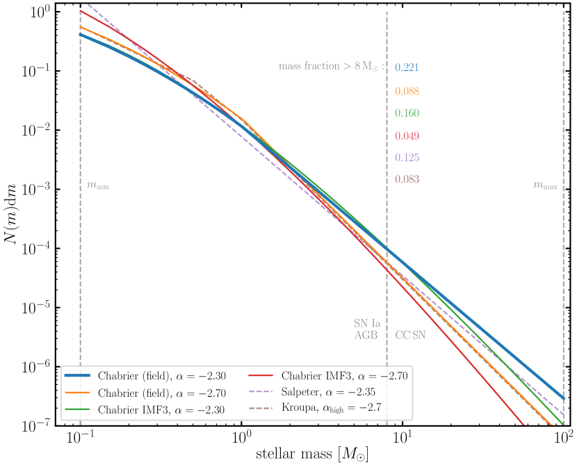
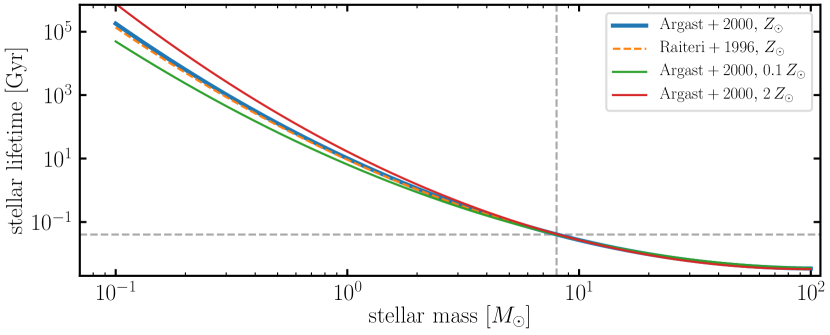
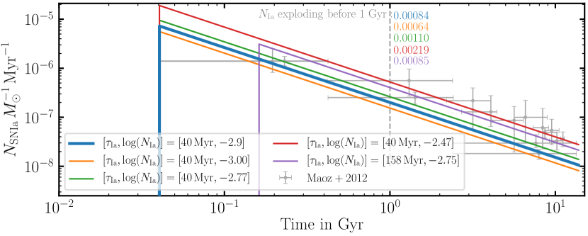
2.1.2 أعمار النجوم
يتم إطلاق العناصر المركبة حديثًا في ISM في نهاية عمر النجم إما عبر رياح النجوم AGB أو عبر انفجارات SN. من أجل تحديد وقت حدوث تلك الأحداث، نحتاج إلى تحديد دالة عمر النجم والتي تعد بشكل عام دالة قوية للكتلة النجمية الأولية وتعتمد فقط بشكل ضعيف على الفلزية النجمية (انظر على سبيل المثال اللوحة اليمنى العلوية من الشكل 1). Chempy ينفذ دوال العمر النجمي لـ Argast2000 وRaiteri1996 حيث يكون الأول هو خيارنا المرجعي. تُظهر اللوحة اليمنى العلوية من الشكل 1 العمر النجمي كدالة للكتلة النجمية في الفلزية الشمسية لكلا المعلمتين (الخط الأزرق الصلب والبرتقالي المتقطع) مقارنةً بتغيرات العمر الجوهرية المتوقعة لمختلف الفلزيات الأولية (الخطوط الحمراء والخضراء). وهذا يوضح بوضوح أن اعتماد أعمار النجوم على الفلزية أقوى من الاختلافات بين المؤلفين المختلفين.
ستنهي معظم النجوم الضخمة حياتها على شكل CC-SNe وتعيد الكتلة والطاقة إلى ISM. لا تزال الكتلة النجمية الدقيقة التي تفصل النجوم المنفجرة عن النجوم غير المنفجرة محل نقاش (مثلًا Doherty2017) ولكن يُفترض عادةً أنها تكون حول (خط رمادي عمودي متقطع في الشكل 1). وبالمثل، هناك أدلة على أن النجوم الأعلى كتلة قد تنتهي حياتها بانهيار مباشر في ثقب أسود دون إطلاق أي طاقة أو عناصر في ISM المحيطة. في هذا العمل، نفترض أن جميع النجوم ذات الكتلة الأكبر من ستتبع هذا المسار وتحدد الكتلة القصوى للنجوم التي تنفجر كـ CC-SN إلى .
من خلال الجمع بين IMF ودالة العمر النجمي، أصبحنا قادرين على حساب التطور الزمني لانفجارات CC-SN وعدد النجوم في مرحلة AGB لـ SSP معين. في اللوحة العلوية اليسرى من الشكل 2، نقارن تطور نموذجنا المرجعي (Chabrier IMF) بنموذج بديل باستخدام Kroupa IMF. والفرق الأكثر أهمية هو عدد النجوم العالية الكتلة الناتجة عن المنحدرات المختلفة العالية الكتلة لـ IMFs والتي تتجلى في عدد مختلف من CC-SN. ينتج عن Chabrier IMF ضعف عدد CC-SN مقارنة بـ Kroupa IMF.
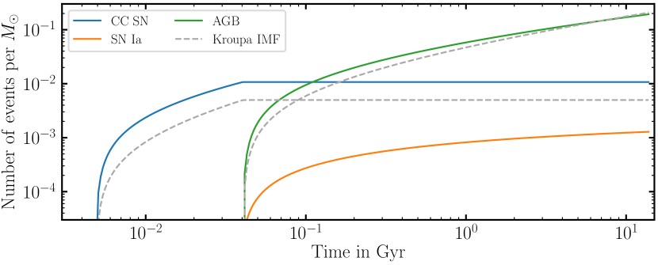
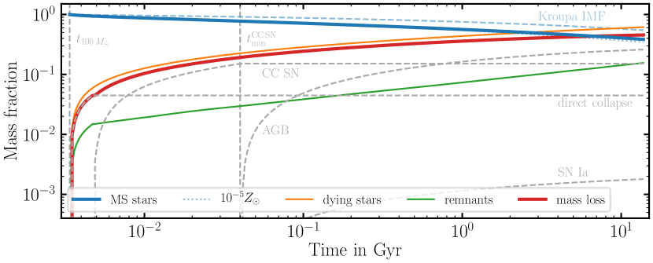
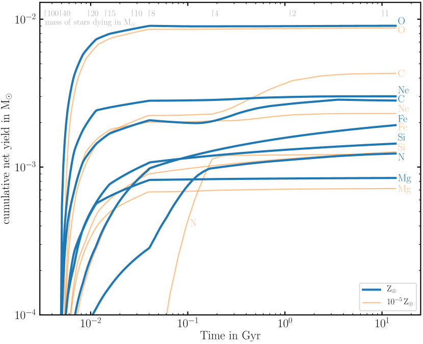
2.1.3 أزمنة تأخير SN Ia
إن النجوم السلفية بالإضافة إلى آلية الانفجار الناتجة عن انفجارات SN Ia غير مفهومة جيدًا. ولذلك فإننا نتعامل مع جزء النجوم ونطاق الكتلة الذي تنفجر فيه النجوم على أنه SN Ia تجريبيا. نحن نحدد توزيع وقت التأخير (DTD) لانفجارات SN Ia بقانون الطاقة الذي يتبع Maoz2010 (انظر أيضًا الجدول 1):
| (2) |
التطبيع وعدد SN Ia لكل كتلة شمسية خلال فترة زمنية 15 Gyr ()، والتأخير الزمني حتى وقوع أحداث SN Ia الأولى () هي معلمات مجانية تم الحصول عليها من الملاحظات (مثلًا Maoz2012). تُظهر اللوحة اليمنى السفلية من الشكل 1 تحقيقات مختلفة لتوزيع وقت التأخير مقارنة بالبيانات الخاصة بانفجارات SN Ia بواسطة Maoz2012. يفترض نموذجنا الافتراضي أن التطبيع SN Ia () من MaozMannucci2012 ويعتبر وقت التأخير () هو الحد الأدنى لعمر النجوم التي قد تنفجر مثل SN Ia، Myr لـ نجوم . يظهر في الشكل 2 العدد الناتج من انفجارات SN Ia كدالة للوقت. من خلال اختيارنا التجريبي للمعلمات، يكون هذا مستقلاً عن IMF الذي تم اختياره بالضبط.
ونود أن نشير هنا إلى أن Chempy قادر على حساب توزيع النجوم على طول انفجارات IMF وSN Ia كعملية عشوائية. ومع ذلك، بمجرد أن تكون كتلة SSP كبيرة بما فيه الكفاية ( M⊙) فإن هذا يتقارب بسرعة مع الحل التحليلي. ولذلك ومن أجل البساطة الحسابية استخدمنا النسخة التحليلية الأسرع في هذا العمل.
2.1.4 فقد الكتلة النجمية
نحن ندرس ثلاث قنوات مختلفة تساهم في الكتلة والتخصيب العنصري: المستعر الأعظم من النوع Ia (SN Ia)، والمستعر الأعظم المنهار (CC-SNe)، ونجوم الفرع العملاق المقارب (AGB). بالنسبة للقناتين الأخيرتين، فإننا نعتبر الفلزية والتخصيب المعتمد على الكتلة، أي أن التخصيب العنصري والكتلة المتبقية يعتمدان على الفلزية النجمية بالإضافة إلى كتلة النجوم المحتضرة33 3 من ناحية أخرى، فإن إطلاق الطاقة لـ CC-SNe ثابت على القيمة المرجعية لـ erg لكل انفجار ونحن لا نعتبر التغذية الراجعة النشطة من رياح AGB في الوقت الحالي. وعلى هذا النحو بشكل واضح على عمر النجوم. ونفترض أيضًا أن جميع المواد ذات الصلة لا يتم إخراجها إلا في نهاية عمر النجم. من ناحية أخرى، يتبع SN Ia مسار انفجار مختلف ولا نفترض أي اعتماد على الفلزية. معادلات كيفية حساب فقد الكتلة لـ SSP معين بين الأوقات و هي مثلًا، الواردة في القسم 4، المعادلة 2 و3 من Wiersma2009. يظهر الإطلاق الزمني الناتج للكتلة في ISM وفقد الكتلة المصاحب لجسيم SSP في اللوحة اليسرى السفلية من الشكل 2. يُظهر الخط الصلب الأزرق الكتلة المتطورة لنجوم التسلسل الرئيسي في SSP لنموذجنا المرجعي (Chabrier IMF)، ويظهر الخط الأزرق المتقطع نموذجًا بديلاً يفترض Kroupa IMF. بمقارنة الخطين نرى أن اختيار IMF له تأثير كبير على فقد الكتلة المتوقع، أقل من الفلزية الأولي لـ SSP الذي يظهر بخط أزرق منقط ويتبع تقريبًا الخط الأزرق الصلب المرجعي.
يوضح الخط البرتقالي الرفيع مقدار كتلة النجوم المحتضرة كدالة للوقت. لا يتم إرجاع كل كتلة النجوم المحتضرة إلى ISM حيث تترك النجوم المنفجرة وراءها بقايا نجمية (خط أخضر أو ثقب أسود أو قزم أبيض اعتمادًا على كتلة النجم). وبالتالي فإن الخط الأحمر الصلب يوضح مقدار الكتلة التي تم إرجاعها إلى ISM والتي تنتج من طرح الكتلة المتبقية من كتلة النجوم المحتضرة. تعمل الخطوط المتقطعة الرمادية الرفيعة على تقسيم فقد الكتلة إلى القنوات المختلفة التي يتتبعها نموذجنا. لاحظ، بعد زمن Hubble، معظم الكتلة التي عادت إلى ISM تأتي من رياح نجوم AGB تليها CC-SN. بالنسبة للنجوم الأكثر ضخامة التي تمر بانهيار ثقب أسود مباشر، نفترض أن جزءًا من الكتلة من قد تم إرجاعه إلى ISM. تعيد انفجارات SN Ia مقدارًا ضئيلًا جدًا من الكتلة المطلقة. ومع ذلك، كما سنرى لاحقًا، فإن مساهمتهم في كتلة الحديد لا تزال كبيرة.
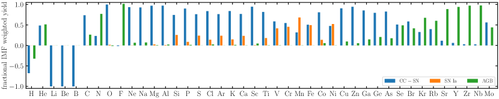
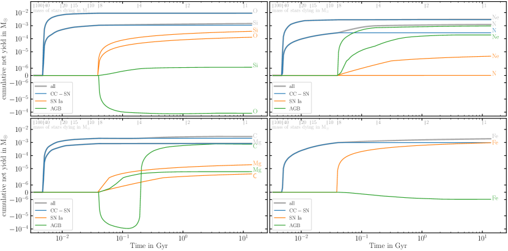
2.1.5 نتاجات التخليق النووي
يتم حساب التخصيب العنصري في Chempy وفقًا لجداول المردودات المتاحة للجمهور من الأدبيات. يتم عرض قائمة بجداول المردودات المطبقة في الجدول 2 ولكن من السهل توسيع هذه القائمة بشكل أكبر باستخدام دوال Python الخاصة بـ Chempy. مجموعة المردودات المرجعية لدينا على سبيل المثال تجمع بين الجداول حسب Karakas2016 لنجوم AGB مع الجداول من Chieffi2004 لـ CC-SN والمردودات من Seitenzahl2013 لـ SN Ia44 4 نموذج N100 المحسوب في 3D يحل محل نموذج 1D W7 من Iwamoto1999 الذي كانت معدلات التقاط الإلكترون القديمة فيه تزيد عن إنتاج Ni وتنتج أقل من اللازم وفرة Mn. تتم معالجة ذلك باستخدام نماذج Seitenzahl2013 التي تعمل على إعادة إنتاج العناصر التي يمكن ملاحظتها بشكل أفضل بواسطة Sim2013.
يغير التخليق النووي النجمي الجزء النسبي للعناصر داخل النجم من خلال معدلات التدمير والإنتاج المختلفة للعناصر المختلفة. يتم تدمير العناصر الخفيفة مثل الهيدروجين أو الهيليوم بشكل تفضيلي لصالح العناصر الأكثر كتلة. وبالمثل، فإن العناصر الضخمة مثل الحديد لا تشارك في عمليات الاندماج الأخرى ويمكن اعتبارها المنتج النهائي للتخليق النووي النجمي. لذلك قمنا بتقسيم التخصيب العنصري للنجوم إلى قسمين: الجزء الأول يصف كمية العناصر المركبة حديثًا، والجزء الثاني يصف الوفرة الأولية للعناصر التي تمر عبر النجم دون تغيير. يصف هذا الجزء الثاني التركيبة العنصرية للولادة ISM والتي تكون محبوسة في الغلاف الجوي للنجم ويتم إطلاقها مرة أخرى إلى ISM في نهاية حياة النجم (انظر أيضًا مناقشة القسم 4 من Wiersma2009). نشير إلى مجموعات المردودات بعد هذا التمييز بين العناصر المنتجة حديثًا من وفرة العناصر المولدة للنجوم على أنها مردودات صافية بينما يشار إلى الجداول التي تتضمن تكوين الولادة باسم المردودات الإجمالية. تضمن صياغة عائد الكتلة العنصرية بهذه الطريقة أن تكون جداول المردودات مستقلة عن التركيب الكيميائي الأولي الدقيق لنماذج CC-SN الأساسية وتحتوي فقط على العناصر المركبة حديثًا. من ناحية أخرى، في جداول صياغة الناتج الإجمالي قد تحتوي على عناصر لم يتم تصنيعها في النجم ولم تكن متوفرة في ISM، فقد تم تشكيلها ببساطة لأنها كانت جزءًا من الوفرة الأولية لنموذج الانفجار CC-SN. جميع جداول المردود المطبقة في Chempy تدرج إرجاع العناصر في صيغة صافي المردود وتوجد لمختلف المعادن النجمية الأولية (انظر الجدول 2).
| Yield Table | Masses | Metallicities |
|---|---|---|
| CC SN | ||
| Portinari1998 | [6,120] | [0.0004,0.05] |
| Francois2004 | [11,40] | [0.02] |
| Chieffi2004 | [13,35] | [0,0.02] |
| Nomoto2013 | [13,40] | [0.001,0.05] |
| Frischknecht2016 | [15,40] | [0.00001,0.0134] |
| West & Heger (in prep.) | [13,30] | [0,0.3] |
| Ritter2018 | [12,25] | [0.0001,0.02] |
| Limongi201855 5 Using the rotation parametrization of Prantzos2018 | [13,120] | [0.0000134,0.0134] |
| SNIa | ||
| Iwamoto1999 | [1.38] | [0,0.02] |
| Thielemann2003 | [1.374] | [0.02] |
| Seitenzahl2013 | [1.40] | [0.02] |
| AGB | ||
| Karakas2010 | [1,6.5] | [0.0001,0.02] |
| Ventura2013 | [1,6.5] | [0.0001,0.02] |
| Pignatari2016 | [1.65,5] | [0.01,0.02] |
| Karakas2016 | [1,8] | [0.001,0.03] |
| TNG66 6 The Ilustris-TNG (Pillepich2018; Naiman2018) yield set for AGB stars is a mixture of yields taken from Karakas2010; Doherty2014 and Fishlock2014 | [1,7.5] | [0.0001,0.02] |
| Hypernova | ||
| Nomoto2013 | [20,40] | [0.001,0.05] |
تُظهر اللوحة اليمنى من الشكل 2 التطور الزمني التراكمي لصافي مردودات العناصر المختلفة 7 التي يتم إرجاعها بواسطة SSP من الكتلة الإجمالية . يظهر الخط الأزرق السميك SSP من الفلزية الشمسية بينما تظهر الخطوط البرتقالية الرفيعة نتائج SSP من . تُظهر هذه اللوحات أن O وNe وMg تم إطلاقها جميعًا في وقت مبكر بواسطة نجوم ضخمة ذات أعمار قصيرة. من ناحية أخرى، تمتلك C أو N أو Fe مساهمات كبيرة في الوقت المتأخر من النجوم ذات الكتلة المنخفضة وانفجارات SN Ia. وبمقارنة الخطوط الزرقاء والبرتقالية، يمكننا أن نقدر التطور الكبير في صافي المردودات ذات المعادن النجمية. لاحظ أن C هو العنصر الوحيد الذي يُظهر إنتاجًا أكبر عند فلزية منخفضة، مما قد يفسر ملاحظات النجوم الفقيرة بالمعادن المعززة بالكربون في MW (مثلًا Starkenburg2014).
يوضح الشكل 3 بمزيد من التفصيل أصل الاختلافات في وقت إصدار العناصر لمجموعة المردود المرجعي الخاصة بنا. في هذا الشكل قمنا بتقسيم عائد المردود التراكمي إلى المساهمات من قنوات التخليق النووي المختلفة (CC-SN باللون الأزرق، SN Ia باللون البرتقالي ورياح AGB باللون الأخضر). تعرض اللوحة العلوية رسمًا بيانيًا للمساهمة الجزئية لصافي المردود لكل قناة تخليق نووي مدمجة عبر IMF وعلى مدار فترة Hubble لمجموعة فرعية من 42 من إجمالي عناصر 81 التي تم تتبعها بواسطة Chempy77 7 راجع البرنامج التعليمي 8 لحزمة Chempy في https://github.com/jan-rybizki/Chempy/tree/master/tutorials.
تعتبر قيم H وLi وBe وB سلبية مما يشير إلى استهلاكها التفضيلي داخل النجوم. بالنسبة للعناصر الأخرى، توضح هذه الأرقام أن معظمها ينشأ من مجموعة قنوات مختلفة ذات مساهمات نسبية مختلفة. على سبيل المثال، بالنسبة للحديد وNi نرى أن CC-SN وSN Ia يساهمان بكميات متساوية من Fe في التخصيب (يمكن التوصل إلى استنتاجات مماثلة لـ Cr، V). يتم إنتاج O وNa وMg وAl وCu فقط بواسطة CC-SN بينما ينبع F بالكامل من رياح AGB. بالنسبة لـ He من ناحية أخرى، نرى أن رياح CC-SN وAGB تساهم بكميات متساوية تقريبًا من الكتلة في التخصيب. يتم إنتاج C في الغالب في CC-SN ولكن لديه ما يقرب من ربع مساهمة رياح AGB بينما يظهر N العكس تمامًا. تم إصدار Mn مرة أخرى في الغالب بواسطة SN Ia بمساهمة الثلث بواسطة CC-SN. أخيرًا، Si، S، Ar أو Ca تنشأ من انفجارات CC-SN بمساهمة ربع تقريبًا بواسطة SN Ia.
بينما بالنسبة لبعض العناصر، قد تساهم القنوات المختلفة بشكل متساوٍ في عودة العناصر، ويمكن أن يكون هناك تأخير زمني كبير في بداية إطلاق عناصر تصل إلى 100 Myr (وقت ديناميكي واحد تقريبًا داخل القرص النجمي لمجرة L⋆) بين إطلاق العناصر من مصادر مختلفة. يتم تسليط الضوء على ذلك في اللوحات الأربع السفلية التي توضح صافي المحصول التراكمي للعناصر المختلفة كدالة للوقت (الخطوط الرمادية) مقسمة إلى مساهمات من قنوات التخليق النووي المختلفة (CC-SN باللون الأزرق، SN Ia باللون البرتقالي ورياح AGB باللون الأخضر). بينما تبدأ CC-SN في إطلاق عناصرها بمجرد انفجار النجوم الأكثر ضخامة (، Myr بعد ولادة SSP)، تطلق الرياح النجمية SN Ia وAGB عناصرها في وقت لاحق ( Myr بعد الولادة). ومن المثير للاهتمام أن إطلاق O بواسطة انفجارات SN Ia يقابله تقريبًا تدمير الأكسجين في نجوم AGB. وبالمثل، هناك فترة زمنية يكون فيها صافي عائد AGB لـ C سالبًا بسبب نجوم AGB العالية الكتلة88 8 ملاحظة، هذا صحيح فقط بالنسبة لصافي المردود. سيكون إجمالي المردود الشامل إلى ISM هو مجموع العناصر المركبة حديثًا والمشار إليها باسم صافي المردود والوفرة الأولية للعناصر. هنا، سيتم دمج بعض من C الأولية في عناصر ذات كتلة أعلى مما يقلل بشكل فعال من وفرة C في التركيبة الأولية. وتصبح موجبة فقط عندما تدخل النجوم ذات الكتلة الأقل إلى مرحلة AGB.
في حين أن التطور الزمني متشابه من الناحية النوعية لجميع المردودات الصافية المأخوذة من مصادر مختلفة في الأدبيات، إلا أن الاتفاق الكمي ليس كذلك. لا يوجد إجماع حقيقي على مقدار كتلة عنصر معين يتم تصنيعه في نجم معين (كدالة للفلزية والكتلة) ولا المساهمة النسبية للقنوات المختلفة في عنصر واحد. في الواقع، يمكن أن يكون هناك اختلاف يصل إلى عامل قليل بين مجموعات المردودات المختلفة. تم تسليط الضوء على هذه الحقيقة في الشكل 4 الذي يقارن الفرق الكسري بين متوسط صافي المردود IMF من جداول المردود المختلفة في الأدبيات مقارنة بمجموعة المردود المرجعي لدينا. تقارن اللوحة العلوية مردودات SN Ia، وتقارن اللوحة الوسطى مردودات CC-SN (انظر أيضًا الشكل 17 للحصول على جداول مردودات إضافية) وتقارن اللوحة السفلية مردودات الرياح AGB. لاحظ أن المحور الصادي موجود في مقياس لوغاريتمي مما يوضح أنه بالنسبة لبعض العناصر يمكن أن يصل الاختلاف إلى عامل قليل.
للوهلة الأولى قد يعطي هذا الانطباع بأن النواتج الكيميائية بشكل عام قد لا يمكن الاعتماد عليها. ومع ذلك، عند التحقيق في هذا الرقم عن كثب نرى أنه بالنسبة للعناصر الأكثر وفرة (H، He، O، C، Ne، Fe، N، Si، Mg، S) الاختلافات بين جداول المردودات المختلفة أصغر من عبر جميع القنوات (انظر أيضًا Romano2010, لمناقشة أعمق لحالات عدم اليقين المرتبطة بمردودات نجمية محددة). يجب أن يوضع عدم اليقين الجوهري هذا في الاعتبار عند مقارنة تنبؤات النماذج بالملاحظات. نلاحظ أيضًا أن هذه ليست سوى حالات عدم اليقين المنسوبة إلى النماذج النجمية وعمليات التخليق النووي. تنشأ حالات عدم يقين إضافية عند استخدام IMF مختلف (انظر على سبيل المثال مناقشة الشكل 1).
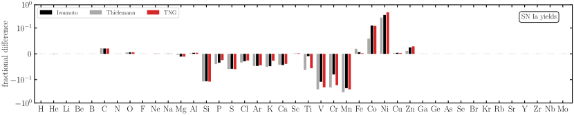
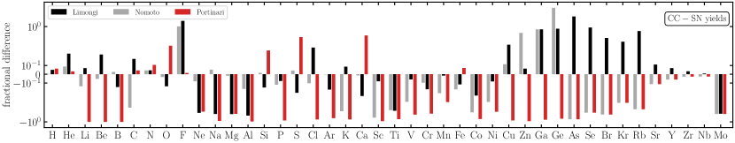
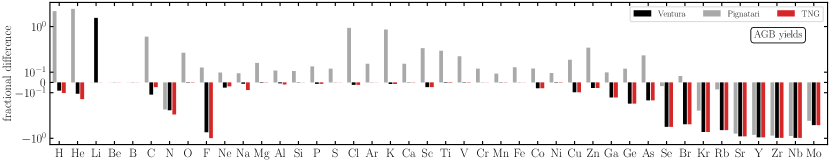
2.1.6 اقتران نموذج SSP بعمليات المحاكاة العددية
في الأشكال 2 و3 أظهرنا أن هناك تطورًا زمنيًا كبيرًا للتخصيب الكيميائي لـ SSP واحد على مدار عمره. ولذلك فمن الضروري أن نتابع بشكل صريح الإطلاق الزمني للعناصر في عمليات المحاكاة العددية بدلاً من تطبيق تقريب إعادة التدوير الفوري. تتبع العناصر المختلفة مسارات مميزة تجعل من الصعب نسبيًا تقريب تطورها بدقة من خلال مجموعة صغيرة من الدوال التحليلية. لذلك يبدو أن نهج جدول البحث هو التنفيذ الأكثر وضوحًا للاستفادة من التخصيب الكيميائي في عمليات المحاكاة العددية.
إن استخدام جداول صافي المردود في Chempy يجعل تطبيق وصفات التخصيب الكيميائي المصاغة في Chempy في عمليات المحاكاة العددية أمرًا سهلاً نسبيًا. عادةً ما تتتبع عمليات المحاكاة هذه الوفرة الأولية للعناصر في الغاز والجسيمات النجمية بحيث يتبع المردود العنصري المجمع لعنصر ، في خطوة زمنية من جسيم نجمي ذو كتلة عبر
| (3) |
حيث هي الكتلة المركبة حديثًا للعنصر المأخوذة من جداول صافي المردود عند المعادن النجمية المناسبة التي يتم إطلاقها خلال هذه الخطوة الزمنية و هي مقدار الكتلة الأولية لذلك العنصر الموروثة من سحابة غاز الولادة التي يتم إطلاقها في هذه الخطوة الزمنية. لاحظ أن قد يكون سالبًا بالنسبة لعناصر مثل الهيدروجين الذي يتم دمجه في عناصر ذات كتلة أعلى. مجموع على جميع العناصر سوف يلخص بالضبط إجمالي الكتلة المفقودة بواسطة SSP. بشكل عام، يتطلب الحفاظ على الكتلة أن مجموع جميع العناصر في جدول صافي المردود يجب أن يُرجع حيث أن جميع العناصر المركبة حديثًا تنتج عن تدمير بعض العناصر ذات الكتلة الأخف.
3 التطبيق: محاكاة كونية عالية الدقة لمناطق منتقاة
| Name | CC-SN yield | SN Ia yield | AGB yield | IMF | SN Ia | SN Ia |
|---|---|---|---|---|---|---|
| slope | delay time | normalisation | ||||
| new fid | Chieffi2004 | Seitenzahl2013 | Karakas2016 | -2.3 | 40 Myr | |
| alt | Limongi2018 | Seitenzahl2013 | Karakas2016 | -2.3 | 40 Myr | |
| alt2 | West & Heger (in prep.) | Seitenzahl2013 | Karakas2016 | -2.3 | 40 Myr | |
| alt3 | Nomoto2013 | Seitenzahl2013 | Karakas2016 | -2.3 | 40 Myr | |
| alt4 | Nomoto2013 | Seitenzahl2013 | TNG | -2.3 | 40 Myr | |
| steepIMF | Chieffi2004 | Seitenzahl2013 | Karakas2016 | -2.7 | 40 Myr | |
| longDelay | Chieffi2004 | Seitenzahl2013 | Karakas2016 | -2.3 | 158 Myr | |
| highNorm | Chieffi2004 | Seitenzahl2013 | Karakas2016 | -2.3 | 40 Myr |
لقد اتخذنا النهج المذكور أعلاه وقمنا بتنفيذ الإصدار الزمني للعناصر كما تم تصنيعها بواسطة Chempy في كود هيدروديناميكا الجسيمات الملساء الحديثة (SPH) Gasoline2 (Wadsley2017). يمكن العثور على كود بايثون الذي يوضح كيفية استخدام Chempy لتجميع جداول المردودات على https://github.com/TobiBu/chemical_enrichment.git. في هذه الدراسة، قمنا بإجراء محاكاة تكبير كوني 23 للمجرات التي تتراوح من في الكتلة النجمية. تم اعتماد وصفات التغذية الراجعة النشطة والشروط الأولية من مشروع NIHAO (Wang2015) وللاكتمال نناقشها بإيجاز أدناه. يتم سرد المعلمات الأساسية لكل مجرة مركزية في الجدول 4.
تعتمد مجرات NIHAO معلمات كونية من Planck، وهي: =0.3175, =0.6825, =0.049, H0 = 67.1 Mpc-1, = 0.8344. يتم إنشاء الشروط الأولية للتكبير باستخدام نسخة معدلة من حزمة GRAFIC2 (Bertschinger2001; Penzo2014) عن طريق تحديد المجرات لإعادة المحاكاة من المادة المظلمة الكونية فقط، حيث يتم تحديد المربعات فقط على كتلة الهالة المظلمة مع معيار العزل لأسباب عددية. رسميًا، نحن نعتبر فقط الهالات التي لا تحتوي على هالة أخرى بكتلة أكبر من خمس الكتلة الفريالية ضمن من أنصاف الأقطار الفريالية.
القوة المعتمدة لتخفيف المادة المظلمة، الغاز وجسيمات النجوم مدرجة في الجدول 4. المجرات المحاكاة من مشروع NIHAO تتطابق عمومًا مع الخصائص المرصودة للمجرات المركزية (انظر مثلًا Dutton2017; Obreja2016; Obreja2019a; Buck2017; Buck2018) وMW/M31 للأقمار الصناعية (Buck2019c). كما أنها تظهر أيضًا تقاربًا رقميًا جيدًا من حيث الدقة (Buck2019b; Buck2020) ووصفات التغذية الراجعة (مثلًا Obreja2019). على وجه الخصوص، تؤدي وصفات التغذية الراجعة المعتمدة إلى تكوين ثنائية كيميائية للقرص النجمي لمجرات L⋆ (Buck2020b).
3.1 الهيدروديناميكية
يستخدم حلال الديناميكا المائية Gasoline2 (Wadsley2017) صيغة حديثة لطريقة هيدروديناميكا الجسيمات الملساء التي تعمل على تحسين الخلط متعدد المراحل وإزالة التوتر السطحي العددي الزائف. تستخدم عمليات المحاكاة نواة التنعيم Wendland C2 (Dehnen2012) مع عدد من جزيئات 50 المجاورة لحساب الخواص الهيدروديناميكية المصقولة. تستخدم معالجة اللزوجة الاصطناعية سرعة الإشارة كما هو موضح في Price2008 وتم تنفيذ محدد الخطوة الزمنية كما هو موضح في Saitoh2009 بحيث تتصرف الجزيئات الباردة بشكل صحيح عندما تصطدم بموجة انفجارية ساخنة. تستخدم جميع عمليات المحاكاة أرضية ضغط تتبع Agertz2009 للحفاظ على كتلة الجينز التي تم حلها بواسطة كتل النواة SPH على الأقل لقمع التجزئة الاصطناعية. وهذا يعادل المعايير المقترحة في Richings2016 ويحقق معيار Truelove1997 في جميع الأوقات. أخيرًا، اعتمدنا خوارزمية نشر المعادن بين جزيئات SPH كما هو موضح في Wadsley2008 وتمت مناقشتها على نطاق واسع في القسم 2.2 من Shen2010.
يتم تبريد الغاز في نطاق درجات الحرارة من 10 إلى K عبر الهيدروجين والهيليوم وخطوط فلزية مختلفة باستخدام جداول cloudy (version 07.02; Ferland1998) (Shen2010; Obreja2019). يتم تنفيذ التسخين الناتج عن إعادة التأين الكوني عبر خلفية الأشعة فوق البنفسجية المجرية الفوقية (Haardt2012).
| simulation | yield set | [Fe/H] | ||||||
|---|---|---|---|---|---|---|---|---|
| [] | [] | [kpc] | [] | |||||
| g2.79e12 | new fid | 18.23 | 21.70 | 2.81 | -1.62 | 0.17 | 9.24 | 1.06/3.18/17.35 |
| g8.26e11 | new fid | 4.00 | 8.00 | 2.93 | -1.74 | -0.06 | 9.01 | 1.06/3.18/17.35 |
| g8.26e11 | alt | 4.10 | 7.51 | 2.67 | -1.80 | -0.14 | 8.99 | 1.06/3.18/17.35 |
| g8.26e11 | alt2 | 3.52 | 7.69 | 2.61 | -1.95 | -0.17 | 8.74 | 1.06/3.18/17.35 |
| g8.26e11 | alt3 | 4.22 | 7.80 | 2.69 | -1.74 | -0.13 | 9.04 | 1.06/3.18/17.35 |
| g8.26e11 | alt4 | 3.91 | 7.65 | 2.68 | -1.81 | -0.17 | 9.04 | 1.06/3.18/17.35 |
| g8.26e11 | steepIMF | 4.29 | 7.93 | 2.47 | -2.01 | -0.22 | 8.61 | 1.06/3.18/17.35 |
| g8.26e11 | longDelay | 4.19 | 7.62 | 2.68 | -1.73 | -0.11 | 9.05 | 1.06/3.18/17.35 |
| g8.26e11 | highNorm | 4.29 | 7.71 | 2.64 | -1.71 | 0.03 | 9.06 | 1.06/3.18/17.35 |
| g7.55e11 | new | 3.75 | 6.81 | 2.71 | -1.77 | -0.09 | 8.97 | 1.06/3.18/17.35 |
| g2.19e11 | new fid | 0.08 | 0.92 | 2.78 | -2.72 | -1.05 | 8.02 | 0.13/0.39/2.17 |
| g1.57e11 | new fid | 0.10 | 1.00 | 4.67 | -2.78 | -1.12 | 8.06 | 0.13/0.39/2.17 |
| g4.99e10 | new fid | 0.01 | 0.19 | 2.93 | -3.18 | -1.51 | 7.53 | 0.04/0.11/0.64 |
| g2.83e10 | new fid | 0.003 | 0.10 | 1.77 | -3.39 | -1.75 | 7.35 | 0.04/0.11/0.64 |
| g2.83e10 | alt | 0.004 | 0.12 | 1.76 | -3.34 | -1.79 | 7.47 | 0.04/0.11/0.64 |
| g2.83e10 | alt2 | 0.003 | 0.14 | 1.63 | -3.57 | -1.81 | 7.02 | 0.04/0.11/0.64 |
| g2.83e10 | alt3 | 0.003 | 0.13 | 2.18 | -3.27 | -1.74 | 7.52 | 0.04/0.11/0.64 |
| g2.83e10 | alt4 | 0.003 | 0.12 | 1.99 | -3.49 | -1.85 | 7.45 | 0.04/0.11/0.64 |
| g2.83e10 | longDelay | 0.003 | 0.10 | 2.04 | -3.35 | -1.77 | 7.34 | 0.04/0.11/0.64 |
| g2.83e10 | highNorm | 0.003 | 0.11 | 1.75 | -3.33 | -1.64 | 7.35 | 0.04/0.11/0.64 |
| g2.83e10 | steepIMF | 0.006 | 0.09 | 1.67 | -3.35 | -1.59 | 7.24 | 0.04/0.11/0.64 |
| g2.83e10 | low fb | 0.005 | 0.16 | 2.02 | -3.19 | -1.56 | 7.51 | 0.04/0.11/0.64 |
| g7.05e09 | new fid | 0.0002 | 0.01 | 0.45 | -3.51 | -1.85 | 7.29 | 0.01/0.03/0.19 |
3.2 تكوّن النجوم والتغذية الراجعة
يتم تنفيذ تكوين النجوم بعد Stinson2006 حيث تكون الكثافة (cm-3، حيث يشير إلى كتلة جسيم الغاز، و إلى تليين جاذبية الغاز وقيمة 50 تشير إلى عدد الجزيئات المجاورة) والبرد (T K) الغاز مؤهل لتكوين النجوم. تم إجراء دراسة منهجية لتأثير كثافة عتبة تكوين النجوم على خصائص المجرة مؤخرًا بواسطة Dutton2019; Dutton2020 حيث فقط عمليات المحاكاة ذات الكثافة العالية ( cm-3) تعيد إنتاج التجمع المكاني المرصود لمجموعات النجوم الشابة (Buck2019).
سيتم تحويل الغاز الذي يحقق المتطلبات المذكورة أعلاه بشكل عشوائي إلى جزيئات نجمية وفقًا لما يلي: ، حيث هو كتلة جسيم النجم المتكون، و كتلة جسيم الغاز، و هو الوقت الفاصل بين أحداث تكوين النجوم (هنا: yr) و هو الزمن الديناميكي لجسيمات الغاز. يشير المتغير إلى كفاءة تكوين النجوم، أي جزء الغاز الذي سيتم تحويله إلى نجوم خلال الزمن . لقد قمنا بتعيين هذه المعلمة على والتي تعيد إنتاج علاقة Kennicutt1998 Schmidt (Stinson2006). يتم تثبيت كتلة الجسيمات النجمية الأولية عند الولادة على ثلث كتلة الغاز الأولية ويتم تنفيذ فقد الكتلة المتتالي كما هو موضح في القسم 2.1.4
نقوم بنمذجة مدخلات الطاقة من الرياح النجمية والتأين الضوئي من النجوم الشابة المضيئة باتباع وصفات ”التغذية الراجعة النجمية المبكرة” في Stinson2013 وحقن طاقة التغذية الراجعة الناتجة كتغذية راجعة حرارية نقية. يتم تنفيذ مدخلات الطاقة من الموجات الانفجارية CC-SN وSN Ia بعد Stinson2006 باستخدام معدلات المستعرات الأعظمية المتسقة ذاتيًا والتي يتم حسابها بواسطة نماذج التطور النجمي الموضحة في القسم 2. تم اختيار معلمات الكفاءة لكلا قناتي التغذية الراجعة بحيث تحترم مجرة ذات كتلة MW علاقات مطابقة الوفرة (Behroozi2013; Kravtsov2018; Moster2018) في جميع الانزياحات الحمراء.
يتم تنفيذ التغذية الراجعة الأولية من CC-SN وSN Ia وAGB كما هو موضح في القسم 2.1.6. نقوم بجدولة الوقت الذي تم حله، وإطلاق العناصر المعتمدة على الكتلة لمجموعة نجمية واحدة كدالة للفلزية الأولية في شبكة من صناديق الفلزية 50 متباعدة لوغاريتميًا بين في الفلزية مع حل كل صندوق فلزي بواسطة صناديق زمنية 100 متباعدة لوغاريتميًا في الوقت من Gyr. تتبع جميع عمليات المحاكاة لدينا تطور العناصر الأكثر وفرة في 10 افتراضيًا (H، He، O، C، Ne، Fe، N، Si، Mg، S) بينما يمكن بالإضافة إلى ذلك تتبع أي عنصر آخر موجود في جداول المردودات. تستخدم مجموعتنا المعتمدة من جداول المردودات عائدات SN Ia من Seitenzahl2013، وCC-SN من Chieffi2004، وAGB من Karakas2016. بالإضافة إلى ذلك قمنا بمحاكاة مجرة قزمة ومجرة ذات كتلة MW مع نواتج CC-SN متفاوتة (انظر الجدول 3 لمزيد من التفاصيل) حيث أن تلك النواتج يجب أن يكون لها التأثير الأكبر على التركيب الكيميائي النهائي (انظر على سبيل المثال، 3). في هذا العمل، نحدد وفرة العنصر X كـ [X/H] حيث و هما كتلة الغاز أو الجسيمات النجمية للعنصر X وكتلة الهيدروجين بينما و تشير إلى أجزاء الكتلة الشمسية للعنصر X والهيدروجين المأخوذ من Asplund2009. أخيراً، يتم تعريف وفرة عناصر على أنها مجموع (كتلة مرجحة) لـ O وMg وSi وS مثل وفرة [/Fe] مثل [(O+Mg+Si+S)/Fe].
4 النتائج: التركيب الكيميائي للمجرات
نقوم بتقييم نموذج التخصيب الكيميائي الجديد المطبق في Gasoline2 من خلال دراسة العلاقة بين الكتلة والمعادن النجمية (اللوحة اليسرى من الشكل 5)، وعلاقة الكتلة النجمية [Fe/H] مقابل الكتلة النجمية (اللوحة اليمنى من الشكل 5) والغاز وفرة الأكسجين في الطور (الشكل 6). قارنا عمليات المحاكاة لدينا بالملاحظات من Gallazzi2005 وPanter2008 وKirby2013 وTremonti2004 وZahid2013 وBerg2012 على التوالي. نحن نحقق أيضًا في التغييرات المتعلقة بمجموعة NIHAO المرجعية.
4.1 علاقة الكتلة النجمية بالفلزية
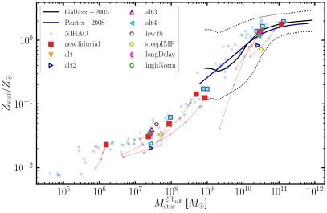
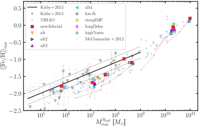
تُظهر اللوحة اليسرى من الشكل 5 علاقة الكتلة النجمية بالفلزية لنموذج التخصيب الكيميائي الجديد (الرموز الملونة) مقارنة ببيانات الرصد كما هو موضح في المفتاح وكذلك النتائج من تنفيذ NIHAO المرجعي (النقاط الزرقاء الباهتة). يتم قياس الكتل النجمية والفلزية لجميع النجوم ضمن 2 أضعاف نصف قطر الضوء النجمي المتوقع، . تُظهر اللوحة الجانبية اليمنى وفرة الحديد النجمي مقابل الكتلة النجمية التي تم قياسها ضمن نصف قطر الضوء المتوقع للمجرات مقارنة بالعلاقة مع المجموعة المحلية من المجرات القزمة المقاسة بواسطة Kirby2013.
دعونا أولاً نقارن نتائج التخصيب الكيميائي الجديد (المربعات الحمراء) مع مجرات NIHAO المقابلة لها (المربعات الزرقاء المفتوحة). ونحن نرى أنه بالنسبة لجميع المجرات تقريبًا، فإن الكتل النجمية، وإجمالي المعادن، ووفرة الحديد النجمي تتفق جيدًا بين التدفقات الجديدة والقديمة. تقع الانحرافات بين المجرات الفردية ضمن التشتت المتوقع الذي قدمته وصفات تكوين النجوم العشوائية (انظر أيضًا Keller2019; Genel2019). لاحظ أن الاتفاق بين الكتل النجمية المقاسة عند نصف قطرين مختلفين يعني أيضًا أن التخصيب الكيميائي الجديد لا يؤدي إلى تغييرات جذرية في ملامح الكتلة النجمية. وبمقارنة ذلك بشكل أكبر مع التجارب التي اختبرنا فيها مجموعات مردودات مختلفة من الأدبيات (الرموز الملونة المفتوحة)، نرى أن الأخيرة لها تأثير متواضع على إجمالي المعادن أو وفرة الحديد ولكن أقل من ذلك على إجمالي الكتلة النجمية. لقد تحققنا من أن هذه الاختلافات في المعادن ترجع فقط إلى اختلاف الإنتاج وليس إلى تاريخ مختلف لتكوين النجوم (انظر الشكل 12 في الملحق).
دعونا ننتقل الآن لمقارنة نتائج المحاكاة بالعلاقات المرصودة. بالنسبة للفلزية الإجمالية، توجد علاقات ملحوظة بالنسبة لمدى الكتلة النجمية بينما بالنسبة لوفرة الحديد المجموعة المحلية فإن الأقزام تقيد العلاقة في نطاق الكتلة . في حين أن إجمالي المعادن في عمليات المحاكاة التي أجريناها يتفق جيدًا مع العلاقة بين الكتلة والمعادن المرصودة، فإن وفرة الحديد حول تقل قليلاً عن العلاقة المرصودة على الرغم من أنها تقع ضمن تناثر المجرات القزمة الفردية المرصودة. وينطبق هذا بشكل خاص على كل من تطبيق NIHAO القديم ونموذج التخصيب الكيميائي الجديد بغض النظر عن جدول المردودات المستخدم. لاحظ أننا نسلط الضوء على التطور الزمني لمجراتنا النموذجية بنقاط حمراء رفيعة متصلة بخطوط. وهذا يدل على أن المجرات تتطور في الغالب على طول علاقة الانزياح الأحمر الصفرية.
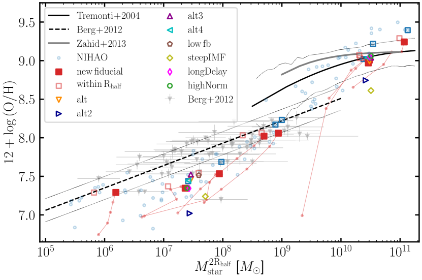
4.2 الكتلة النجمية مقابل وفرة الأكسجين في الطور الغازي
يقارن الشكل 6 وفرة الأكسجين في الطور الغازي لعمليات المحاكاة لدينا بالعلاقة الملحوظة بين Tremonti2004 وZahid2013 وBerg2012. في نهاية العالية الكتلة، يؤدي تنفيذ التخصيب الكيميائي الجديد إلى انخفاض وفرة الأكسجين مقارنة بعمليات محاكاة NIHAO القديمة. نتائجنا الجديدة تتفق بشكل أفضل مع الملاحظات. عند نهاية الكتلة المنخفضة لا نجد أي اختلافات في وفرة الأكسجين بين التطبيقات المختلفة وكلاهما يتفق مع العلاقة المرصودة. عند الكتل النجمية المتوسطة لـ نجد نتائج مماثلة لوفرة الحديد النجمي. كل من نموذج التخصيب الكيميائي الجديد وتنفيذ NIHAO القديم لا يتنبأان بوفرة الأكسجين في الطور الغازي. لقد اختبرنا ما إذا كان هذا يتأثر بالاختيار المكاني المطبق (2 مقابل 1 الموضح في المربعات المفتوحة الحمراء الباهتة) ولكننا نجد فقط اعتمادًا خفيفًا على وفرة الأكسجين على الاختيار المكاني. ومع ذلك، فإن الكتلة النجمية المقاسة لفتحات أصغر تتحول نحو كتل أقل مما يخفف قليلاً من التوتر بين عمليات المحاكاة والملاحظات (خاصة بالنسبة للنماذج ذات وفرة أكبر من O مثل على سبيل المثال alt, alt3).
أخيرًا، نجد أنه فقط تغيير في قوة التغذية الراجعة النجمية (هنا انخفاض في كفاءة الاقتران للتغذية الراجعة النجمية المبكرة من 13% إلى 6%، الخماسي الأرجواني المفتوح) أو تغيير في ميل الكتلة العالية لـ IMF (ألماس الزيتون المفتوح) نحو منحدر أكثر انحدارًا وبالتالي فإن الكمية المخفضة من CC-SN تميل إلى زيادة وفرة الحديد وتقريب عمليات المحاكاة من العلاقات المرصودة عند الكتل النجمية المتوسطة. على الرغم من أننا نجد أن منحدر العالية الكتلة الأكثر انحدارًا IMF مع جدول المردود المرجعي لدينا يتنبأ بوفرة الأكسجين في الطور الغازي بشكل أقوى من النموذج المرجعي.
النتائج التي توصلنا إليها والتي يبدو أن العلاقة الفلزية الكتلية تقيد آلية التغذية الراجعة في المجرات القزمة تتفق مع النتائج الأخيرة من Agertz2020a. وجد هؤلاء المؤلفون أن التغذية الراجعة المتفجرة تطرد الكثير من المعادن من المجرات القزمة منخفضة الكتلة، بحيث تؤدي آليات التغذية الراجعة هذه إلى انخفاض الفلزية عند الكتلة النجمية الثابتة، بينما لا تتأثر علاقات قياس المجرات القزمة الأخرى بهذا. يبدو أن اختباراتنا هنا تؤكد النتائج التي توصلوا إليها على الرغم من أن انخفاض قوة التغذية الراجعة يؤدي أيضًا إلى زيادة كتلتين نجميتين تقريبًا في المجرة القزمة التي تم اختبارها هنا. من المؤكد أن هناك حاجة إلى مجموعة أكبر من المجرات النموذجية بهذا النطاق الشامل للتحقيق في هذه المشكلة بشكل أكبر وربما تقييد آليات التغذية الراجعة في نطاق كتلة المجرة هذا. أيضًا، يجب توخي الحذر عند مقارنة نتائج محاكاة المجرات المعزولة مع العلاقات التي تم الحصول عليها لمجرات المجموعة المحلية التي من الواضح أنها تعيش في بيئة مجرية متأثرة بالمجرتين الرئيسيتين MW وAndromeda. قد يؤدي هذا إلى تحيز المجرات المجموعة المحلية التي ربما تكون قد شهدت تراكمًا للغاز المُخصب مسبقًا أو عانت من نوع ما من تجريد (مثلًا Buck2019c) بواسطة ضغط الكبش وقوى المد والجزر.
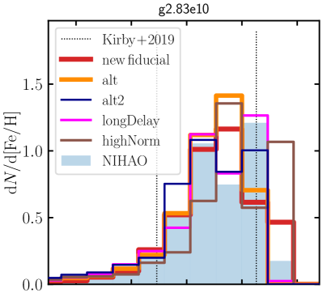
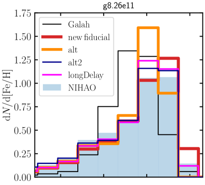
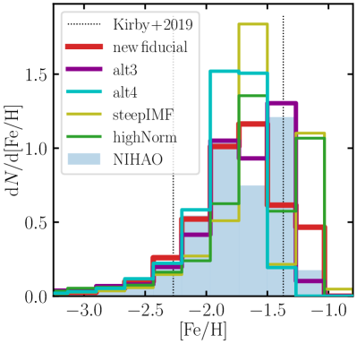
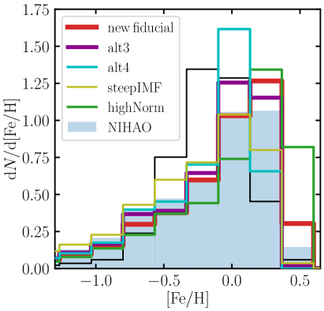
4.3 التوزيعات الفلزية وعناصر
كشف القسم 4.1 أن متوسط الفلزية النجمية لعمليات المحاكاة يتوافق مع العلاقة بين الكتلة الفلزية المرصودة. ومع ذلك، فمن المفيد أيضًا ليس فقط التحقيق في لحظات الترتيب الصفري لتوزيع الوفرة ولكن أيضًا النظر إلى دوال التوزيع. في القسمين الفرعيين التاليين، ندرس بالتفصيل دوال توزيع الفلزية ودوال توزيع عناصر لمجموعات المردودات المختلفة التي تم بحثها في هذا العمل. على عكس القسم السابق، فإننا لا نطبق أي اختيار مكاني ونستخدم جميع جزيئات النجوم داخل نصف القطر الفيرالي للمجرات.
4.3.1 توزيع الفلزية
يوضح الشكل 7 توزيع وفرة الحديد النجمي في المجرة القزمة g2.83e10 (العمود الأيسر) والمجرة ذات كتلة MW g8.26e11 (العمود الأيمن) للجميع 8 نماذج مختلفة. يوضح الشكل 13 في الملحق دالة توزيع إجمالي المعادن للمجرتين. في جميع اللوحات، يُظهر الرسم البياني الأزرق المملوء تنفيذ NIHAO بينما في اللوحات اليسرى في الشكل 7 تُظهر الخطوط العمودية الرفيعة المنقطة نطاق متوسط وفرة الحديد للأقمار الصناعية للمجرة القزمة 5 من M31 كما تم قياسها بواسطة Kirby2019 واللون الأسود الرقيق تُظهر الرسوم البيانية الموجودة في اللوحات اليمنى نتائج من DR3 لمسح GALAH استنادًا إلى اختيار محدود الحجم وبالتالي اختيار النجوم الموجودة في الجوار الشمسي فقط.
تشترك دوال التوزيع لجميع النماذج في سمة مشتركة: فهي تميل نحو انخفاض المعادن/وفرة الحديد. تُظهِر جميع النماذج المحسوبة لهذا العمل ذيلًا ممتدًا نوعًا ما من النجوم ذات الفلزية المنخفض. هذه السمة المشتركة هي مظهر من مظاهر تاريخ تكوين النجوم الذي يتبع نفس الشكل في جميع نماذج 8 (انظر الشكل 12). الحد الأقصى لدوال التوزيع لدينا لـ [Fe/H] للمجرة القزمة (الألواح اليسرى من الشكل 7) يتوافق جيدًا مع الحدود المقاسة بواسطة Kirby2019 لجميع نماذجنا. ومع ذلك، فإن الحد الأقصى لـ longDelay وalt3 وNIHAO قريب من الحد الأعلى الملحوظ. علاوة على ذلك، نرى قممًا ثانوية مهمة لـ highNorm وsteepIMF أعلى من الحد الأقصى.
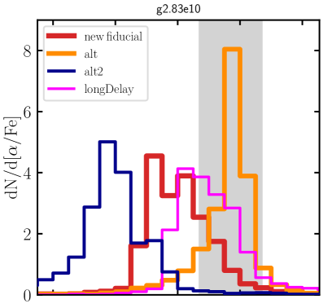
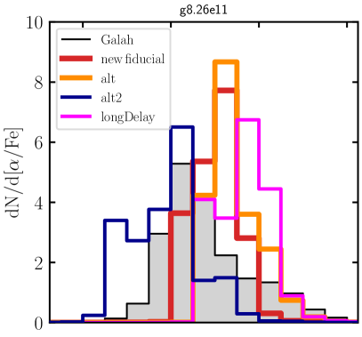
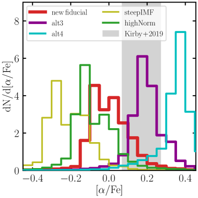
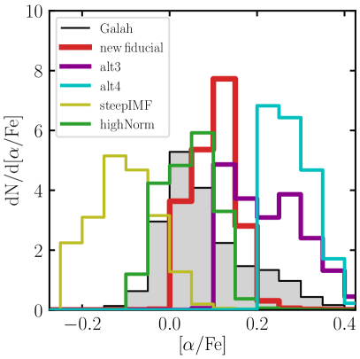
يتوافق شكل دوال التوزيع الخاصة بنا للمجرة الكتلية MW (الألواح اليمنى من الشكل 7) نوعيًا مع الشكل المقاس بواسطة GALAH DR3 للمجرة المحلية MW، أي الحد الأقصى حول [Fe/H] الشمسي مع شكل منحرف، يمتد نحو الأسفل [Fe/H]. ومع ذلك، من الناحية الكمية، نرى أن التوزيع المقاس لـ GALAH DR3 يبلغ ذروته أقل بقليل من الصفر، أي [Fe/H] dex، على غرار معظم الدراسات التي أجريت على المنطقة الشمسية المجاورة (مثلًا Casagrande2011; Katz2021). علاوة على ذلك، فإن التوزيع الملحوظ أقل انحرافًا في GALAH DR3 مقارنة بتطبيقاتنا. إن اختيار النجوم فقط من جوار شمسي في عمليات المحاكاة لا يغير هذا الاستنتاج، لأن هذا يؤثر على كل من أدنى وأعلى صناديق فلزية. ما إذا كان هذا التناقض ناتجًا عن SFH مختلف في عمليات المحاكاة وMW أو بسبب اختلاف مردودات SN Ia يحتاج إلى مزيد من البحث.
في هذا العمل، لم نقم بتغيير مجموعة المردودات لـ SN Ia فقط وقت التأخير والتطبيع والحفاظ على مجموعة المردودات ثابتة على Seitenzahl2013. لمزيد من الاستكشاف المتعمق لتأثير مردودات SN من النوع Ia المختلفة على التطور الكيميائي لـ MW، راجع العمل الأخير لـ Palla2021. يوضح هذا العمل أن كتل Fe وأنماط وفرة [/Fe] أقل تأثرًا بمجموعات المردودات التفصيلية بينما بالنسبة لعناصر ذروة Fe (التي ليست محور هذه الورقة) يبدو أن هناك اعتماد قوي على آلية انفجار القزم الأبيض. هنا نجد أن الاختلاف في وقت التأخير بين نموذجنا المرجعي ( Myr) وlongDelay ( Myr) لا يؤدي إلى اختلافات كبيرة في وفرة الحديد. ومع ذلك، فإن التغيير الطفيف في تطبيع SN Ia ( مقابل للمسار highNorm) يؤدي إلى زيادة طفيفة في وفرة الحديد لكل من المجرة القزمة والمجرة الكتلية MW.
وكما ذكرنا سابقًا، تظهر جميع النماذج متوسطًا مماثلاً للمعادن/وفرة الحديد. لاحظ أننا لا نقوم بإعادة معايرة أي معلمات محاكاة في هذا العمل. من المهم ملاحظة ذلك مرة أخرى كما في القسم الفرعي التالي، ننتقل إلى التحقق من توزيع عناصر المتعلقة بالحديد، نسبة [/Fe]. ولذلك نود أن نؤكد هنا على وجه الخصوص أن توزيعات وفرة الحديد في نماذجنا لا تختلف بشكل كبير ويمكن أن تعزى جميع الاختلافات التي تمت مناقشتها في القسم التالي إلى الاختلافات في جداول الإنتاج (تذكر التشابه في تاريخ تكوين النجوم).
4.3.2 التنوع في توزيع عناصر
تُظهر اللوحات اليسرى من الشكل 8 توزيع وفرة عنصر النجمية لجميع عمليات محاكاة 8 لـ g2.83e10 مقارنة ببيانات الرصد من Kirby2019 للمجرات الفضائية 5 Andromeda موضّحة بالمنطقة المظللة باللون الرمادي. تُظهر اللوحات اليمنى من الشكل 8 الوفرة النجمية لعنصر لنماذج 8 الخاصة بالمجرة الكتلية MW g8.26e11 مقارنةً بـ بيانات GALAH DR3. نحدد هنا وفرة عنصر على أنها [/Fe][(O+Mg+Si+Ca+S+Ti)/Fe]، بينما يستخدم Kirby2019 اتحاد Mg وSi وCa وTi، ويستخدم وGALAH DR3 متوسطًا مرجحًا لعدم اليقين لـ Mg، وSi، وCa، وTi. وعلى النقيض من دوال توزيع وفرة الحديد الموضحة في الشكل 7، يُظهر توزيع عنصر تنوعًا كبيرًا بين جداول المردودات المختلفة أو نقاط قوة التغذية الراجعة. بالنسبة للمجرة القزمة، تمتد قمم توزيعات عناصر المختلفة على نطاق 0.5 dex بين [/Fe] (alt2) حتى [/Fe] (alt4). إن المقارنة مع ملاحظات Kirby2019 للمجرات القزمة ذات الكتلة النجمية المماثلة تضع قيودًا قوية على مجموعات المردودات الصحيحة. تؤدي مجموعة المردودات البديلة فقط alt وalt3 إلى نسب [/Fe] بالتوافق مع تحسينات الملحوظة. تتنبأ جميع النماذج الأخرى بالقيم المرصودة بشكل أقل من المتوقع باستثناء مجموعة المردودات alt4 التي تنتج عناصر بقوة. لقد تأكدنا من أن الاختلافات في الكتلة النجمية بين المجرات النموذجية لدينا والأقزام المرصودة لا تؤثر على استنتاجاتنا. تُظهر اللوحات اليسرى من الشكل 14 في الملحق أن متوسط وفرة عنصر ليس حساسًا للكتلة النجمية للأقزام ويظهر فقط اعتمادًا بسيطًا على الكتلة النجمية. وهذا يعني أن التباين الكوني الذي يتجلى في تواريخ مختلفة لتكوين النجوم في المجرات القزمة ليس له تأثير قوي على توزيع وفرة عنصر عند الكتلة النجمية الثابتة. وهذا يفتح إمكانية تقييد نماذج التخصيب الكيميائي من خلال مقارنة تلك النتائج بقياسات دقيقة وصحيحة للكتل النجمية ووفرتها.
وأخيرا نجد أن معظم الاختلافات بين النماذج المختلفة سببها الاختلافات في وفرة O و Mg كما هو مبين في الشكل 15 في الملحق.
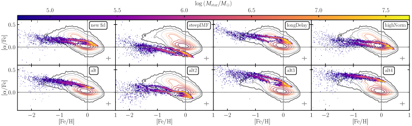
لاحظ أن الاختلافات في وفرة عنصر لا تنتج عن اختلاف في وفرة الحديد كما ناقشنا في القسم السابق. وخاصةً نموذجي steepIMF وalt2 اللذين يتنبأان بوفرة عنصر يظهران وفرة الحديد في نفس النطاق مثل النماذج الأخرى. وبالمثل، من أجل تفسير الإفراط في إنتاج عناصر في نموذج alt4 من خلال عدم التطابق في وفرة الحديد، نتوقع أن ينتج هذا النموذج نقصًا في إنتاج الحديد مقارنة بالنماذج الأخرى. من الواضح أن هذا ليس هو الحال كما تظهر اللوحة اليمنى السفلية من الشكل 7.
بالنسبة للمجرة ذات كتلة MW (اللوحات اليمنى من الشكل 8) فإن الاختلافات ليست واضحة كما هو الحال بالنسبة للمجرة القزمة ولكن الاختلافات بين النماذج لا تزال ملحوظة تمامًا. تمتد قمم توزيعات عناصر المختلفة على نطاق dex بين [/Fe] (steepIMF) حتى [/Fe] (alt3). تشير المقارنة النوعية لبيانات الرصد من مسح GALAH (الرسوم البيانية الرمادية) إلى قيم [/Fe] حول إشارة الطاقة الشمسية إلى استنتاج مفاده أن مجموعات مردودات longDelay وalt, alt3, alt4 تبالغ في التنبؤ تحسين بينما يميل نموذج steepIMF وalt2 إلى تقليل إنتاج تحسين . فقط الطرازان fiducial وhighNorm يتفقان بشكل هامشي مع بيانات GALAH (انظر أيضًا الشكل 9). تتعارض هذه النتيجة مع نتائج المجرة القزمة حيث أفضل النماذج المطابقة هي مجموعات الإنتاج alt, alt3 وlongDelay. لاحظ أن القيمة الدقيقة لتعزيز لا تعتمد بقوة على الكتلة النجمية للمجرة كما يظهر الجانب الأيمن من الشكل 14 في الملحق.
لاحظ أن المقارنة بـ GALAH هي ذات طبيعة نوعية فقط لعدة أسباب. أولاً، يختار المسح GALAH نجوم التسلسل الرئيسي القريبة بشكل أساسي بالقرب من الشمس. مقارنتنا ليست متسقة تمامًا نظرًا لأننا نختار النجوم عبر مدى شعاعي أكبر بكثير في المحاكاة ولم يتم أخذ عينات منها وفقًا لاستطلاع GALAH. ومع ذلك، فقد تأكدنا من أن اختيار نجوم الجوار الشمسي فقط لا يؤثر على نتائجنا في اللوحات اليمنى من الشكل 8 والاستنتاجات اللاحقة، لأن هذا يؤثر فقط على حواف توزيعات ألفا عند وفرة المنخفضة والعالية جدًا. ثانيًا، نحن نقارن نموذج الكتلة العام MW ببيانات MW ومن غير الواضح مسبقًا ما إذا كانت المجرة النموذجية المعينة هي نظير جيد لـ MW. ثالثًا، يمثل MW كائنًا واحدًا ولا يزال من غير الواضح ما إذا كان تحسين يمثل جميع المجرات ذات كتلة MW. لا تتفق النماذج النظرية الحالية على هذه النقطة وتقدم تفسيرات لكلا السيناريوهين (انظر مثلًا Grand2018; Mackereth2018; Clarke2019; Buck2020b; Renaud2020b). ومع ذلك، يجب أن تأخذ المقارنة الكمية في الاعتبار دالة الاختيار الدقيقة للمسح المعين وأن تأخذ في الاعتبار عدم اليقين في القياس بشأن وفرة النجوم والمعادن. لذلك نؤجل إجراء مقارنة أكثر شمولاً لدراسة مستقبلية مخصصة.
بمقارنة دوال التوزيع لعناصر للمجرة القزمة في الجانب الأيسر من الشكل 8 مع تلك الخاصة بالمجرة ذات كتلة MW نجد لجميع نماذج المردود تحولًا ثابتًا لـ dex إلى قيم أكبر لـ [/Fe] للمجرة الأكثر ضخامة. وهذا يتوافق أيضًا مع المجرات الأخرى التي تعمل بجدول المردود المرجعي في عينتنا (انظر الشكل 14 في الملحق). من ناحية أخرى، بالنسبة للملاحظات، إلى الترتيب الصفري، نجد أن متوسط [/Fe] يتناقص مع الكتلة النجمية عند الانتقال من مقياس الكتلة القزم إلى مقياس كتلة MW كما هو متوقع من مساهمة أكبر لـ SN Ia في التخصيب في المجرات ذات كتلة MW وتفاوت كفاءات تكوين النجوم في المجرات. المجرات القزمة (مثلًا Nidever2020). بالطبع، هذه مقارنة مبسطة كما هو الحال أيضًا في النظام القزم، نتوقع أن تكون وفرة دالة للفلزية (مثلًا Fig. 8 Kirby2019). ومع ذلك، فإن فهم السبب الدقيق لهذه النتيجة ومقدارها الذي يمكن أن يعزى إلى كفاءات مختلفة لتكوين النجوم في عمليات المحاكاة والملاحظات يحتاج إلى عينة أكبر من المجرات القزمة وتحليل أكثر تعمقًا وهو خارج نطاق الورقة الحالية التي تركز على جداول مختلفة للإنتاج. هناك حاجة إلى عمل مستقبلي لقياس ما إذا كان هذا الاكتشاف يشكل تحديًا لنماذجنا الحالية، وإذا كان الأمر كذلك، فإن البحث عن سبب هذا الاتجاه المعاكس لتعزيز مع الكتلة النجمية في عمليات المحاكاة والملاحظات سيفتح إمكانيات جديدة لفهمنا لتكوين النجوم والتغذية الراجعة في المجرات (القزمة).
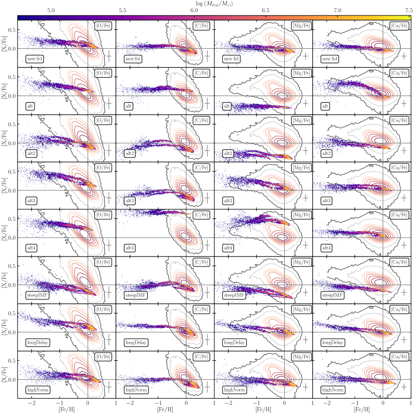
4.4 مسارات الوفرة في [X/Fe] مقابل [Fe/H]
من المعروف الآن أنه بالنسبة لـ MW فإن تطور وفرة كدالة للمعادن يُظهر اتجاهًا متميزًا للغاية (مثلًا Tinsley1979; Wyse1995; Fuhrmann1998; Venn2004; Bensby2014; Hayden2015). تتبع النجوم الفلزية المنخفضة في الموقع هضبة ذات وفرة عالية من والتي تخضع للركبة عند معادن شبه شمسية قليلاً وتنحني نحو وفرة الأقل عند فلزية أعلى. في الوقت نفسه، يوجد تسلسل أقل لوفرة حول وفرة الشمسية عبر نطاق واسع من المعادن. وقد تم تفسير هذه المسارات الغريبة من قبل العديد من المؤلفين بأنها تنشأ من تفاعل رائع بين الجداول الزمنية لتكوين النجوم، والمردودات النجمية وتاريخ تراكم الغاز المحدد في MW (مثلًا Chiappini1997; Matteucci2012; Spitoni2020). ولذلك فإن هذا المستوى من الأشياء القابلة للملاحظة يوفر قيدًا مثاليًا للتفاعل بين مجموعات المردودات ونموذج التغذية الراجعة. لقد أظهرنا في Buck2020b أن مثل هذا التسلسل الثنائي هو ميزة عامة إلى حد ما لنظام التغذية الراجعة NIHAO. في هذا القسم، نستخدم هذه النتيجة لفحص مجموعات المردودات المختلفة من حيث قدرتها على إعادة إنتاج (عند معلمات التغذية الراجعة الثابتة) موقع وشكل النسق الثنائي للوفرة . هناك أمران مهمان هنا: من ناحية، يجب تحقيق التخصيب إلى وفرة عالية من من dex عند فلزية منخفضة وقيم شمسية في نفس الوقت عند فلزية شمسية. وثانيًا، يجب أن يحدث شكل/موضع ثني الركبة/لأسفل تقريبًا عند الفلزية المرصود لأنه يقيد نقطة التحول حيث تتغير المساهمة النسبية لـ CC-SN إلى SN Ia.
في الشكل 9، قمنا بمقارنة المستوى [/Fe] مقابل [Fe/H] لجميع موديلاتنا. تُظهر اللوحة العلوية اليسرى مجموعة المردودات المرجعية وعلى يمينها نقارن النماذج الثلاثة التي تختلف المعلمات الفيزيائية لـ SSP بينما يُظهر الصف السفلي مجموعات المردودات البديلة الأربعة التي تم اختبارها. من أجل توجيه العين، نشير إلى القيم الشمسية بخطوط رمادية ونتائج الرصد المتراكبة من مسح GALAH. لاحظ أنه في هذا العمل، نطبق فقط اختيارًا مكانيًا بسيطًا على البيانات المحاكاة ونمتنع عن النمذجة بالتفصيل لدالة اختيار GALAH (على سبيل المثال، مع مراعاة حقيقة أن GALAH يلاحظ بشكل أساسي الأقزام الباردة). بالإضافة إلى ذلك، نرفق هذه المؤامرة بالأرقام 10 و11 التي تقارن مسارات وفرة العنصر الواحد (الأعمدة) بين جميع النماذج (الصفوف). في هذا العمل الاستكشافي الأول، قررنا التركيز على المقارنة التفاضلية بين مجموعات المردودات. لذلك، امتنعنا عن النمذجة الدقيقة لدالة التحديد GALAH وقررنا ببساطة اختيار النجوم ضمن حلقة kpc من عمليات المحاكاة.
في جميع اللوحات ، يمكن رؤية تسلسلين: تسلسل أولي ممتد بأعلى كثافات كتلة نجمية تصل إلى [Fe/H] وإظهار ثنائية النسق عند أعلى المعادن ، وتسلسل ثانوي عند [Fe/H] منخفض وكذلك [/Fe] منخفض (الشكل 9). التسلسل الأساسي عبارة عن نجوم في الموقع للمجرة الرئيسية، في حين أن التسلسل الثانوي ينشأ من المجرات التابعة المتراكمة في عمليات المحاكاة هذه (انظر Buck2020, لمزيد من التفاصيل). وجدت الأدبيات الحديثة (Hayes2018; Das2020; Buder2020) اختلافات واضحة مماثلة بين النجوم المتراكمة والنجوم الموجودة في الموقع أيضًا بالنسبة لـ MW. تتوافق وفرتها المنخفضة في عناصر وكذلك Na و Al نوعيًا مع دراستنا. ومع ذلك، فإن توقعاتنا لـ [C/Fe] أعلى من التسلسل الأولي، في حين أنها وجدت أنها أقل من التسلسل الأولي في الملاحظات (مثلًا Hayes2020) وجدت أن [C/Fe] أقل من التسلسل الأولي في نفس [Fe/H] لـ MW.
وبعد ذلك، نركز أولاً على التسلسل الأولي، قبل أن نتناول التسلسل الثانوي.
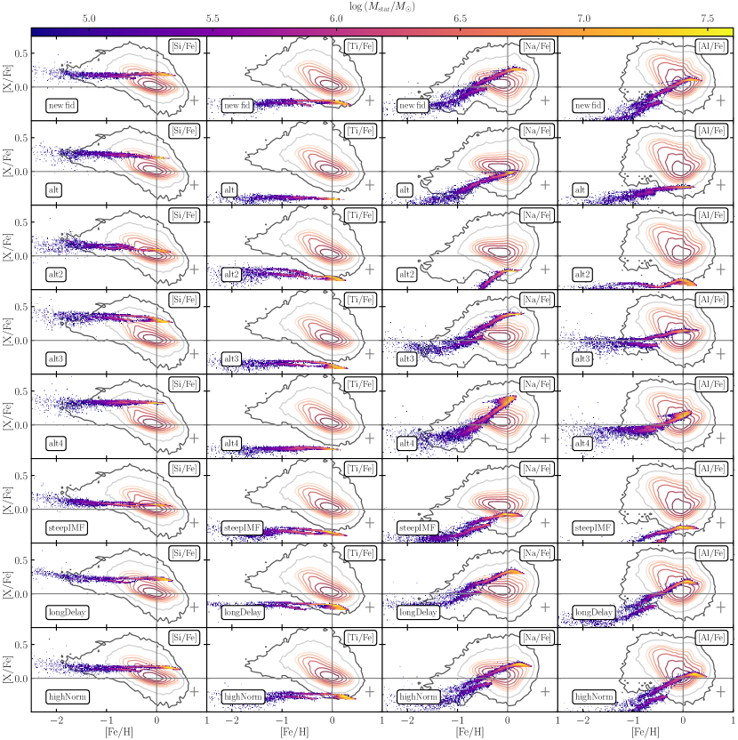
يؤكد الشكل 9 فكرتنا السابقة حول الاختلافات المميزة بين مجموعات المردودات المختلفة. نجد مجموعة من الأشكال لثنائية تتراوح من تسلسل واحد يتطور من [/Fe] الأعلى إلى الأدنى (alt) عبر ثنائي أقل انفصالًا (نموذج المرجعي) حتى تسلسلات منفصلة جيدًا (جميع النماذج الأخرى). يختلف مقدار تحسين بشكل خاص بين مجموعات المردودات المختلفة كما هو متوقع من تنبؤاتهم المختلفة لإصدار العنصر (على سبيل المثال، الشكل 4). ومن الجدير بالذكر أن نموذج steepIMF الذي يستخدم نفس مجموعة المردودات مثل النموذج المرجعي يقلل بشكل كبير من وفرة في جميع المعادن. يحدث هذا ببساطة بسبب انخفاض عدد النجوم العالية الكتلة والتي تساهم بشكل كبير في تركيب عنصر . على العكس من ذلك، فإن نموذج alt3 يفرط في إنتاج عناصر ولا يصل أبدًا إلى قيم الطاقة الشمسية على الرغم من وجود ثنائية واضحة. يمكن رؤية أقوى فصل بين التسلسلين في نموذج longDelay الذي يحول بداية SNIa إلى Myrs وهو عامل 4 لوقت تأخير أطول مقارنة بالنموذج المرجعي. يناسب المدى highNorm قيم [/Fe] الإجمالية لـ MW بشكل أفضل من المدى المرجعي، لكن العدد الأكبر من SN Ia يؤدي إلى وفرة حديد كبيرة جدًا قليلاً بالنسبة للنجوم المنخفضة .
وأخيرًا، فإن الركبة المزدوجة التي تظهر في النموذج alt2 ترجع إلى تعديل طفيف في SFH في هذا النموذج مما يؤدي إلى قيم أقل لذروة SFR بين الانزياح الأحمر ( Gyr بعد الانفجار الأعظم) كما يتبين من الشكل 12 في الملحق.
دعونا ننتقل لمقارنة التشتت الجوهري الذي يظهر في بيانات المحاكاة بالتسلسلات العريضة المرصودة. في كل لوحة، يسلط التقاطع الرمادي الموجود في الزاوية اليمنى السفلية الضوء على متوسط عدم اليقين الرصدي لوفرة GALAH. في حين أن إعادة توجيه بيانات المحاكاة بدقة لمراعاة دالة اختيار المسح الدقيق وحالات عدم اليقين الرصدية تقع خارج نطاق هذا العمل، إلا أننا ما زلنا ندرك أن التسلسلات المحاكاة تظهر تشتتًا جوهريًا أضيق. وبمقارنة هذه المسارات الضيقة مع متوسط عدم اليقين الرصدي (التقاطع الرمادي)، يبدو أنه حتى عندما نأخذ في الاعتبار عدم اليقين الرصدي الواسع في العمل المستقبلي، فإن المسارات التي تمت محاكاتها لا تزال ضيقة للغاية. يشكل هذا تحديًا لنماذجنا النظرية لشرح التخصيب الكيميائي في المجرات ذات كتلة MW.
يضيف الشكل 10 و11 رؤية أكثر تنوعًا لهذا، حيث تخضع العناصر المختلفة X لمنحدرات مختلفة في المستوى [X/Fe] مقابل [Fe/H] في كل من النماذج وفي بيانات GALAH. لا سيما أن المنحدر الحاد جدًا الذي لوحظ في O لم يتم إعادة إنتاجه بواسطة أي من نماذجنا99 9 لا يزال الأمر محل نقاش، ما إذا كان هذا الاتجاه الحاد هو الاتجاه الفيزيائي الفلكي الحقيقي، أو تم تقديمه من خلال تحليل المراقبة. على سبيل المثال يقيس APOGEE اتجاهًا أقل عمقًا في IR مقارنة بالدراسات البصرية (انظر مثلًا الشكل 22 في Buder2018). لا يزال سبب هذا التناقض غير واضح وتتراوح التفسيرات من البيانات الذرية أو تأثيرات 3D NLTE في IR إلى تأثيرات أخرى غير موضحة في المجال البصري.. C مشابه نسبيًا لجميع الطرازات مع اختلاف أقل مقارنةً بـ O أو Mg مثلًا، على غرار C، فإن مسارات Ca متشابهة نسبيًا في جميع موديلاتنا باستثناء الطراز alt الذي يُظهر تحسينًا أقوى لـ Ca في معادن منخفضة مقارنة بجميع الطرازات الأخرى. بالنسبة لـ Si وNa وAl نجد اختلافات قوية مماثلة بين مجموعات المردودات. فقط بالنسبة لـ Ti تكون هذه الاختلافات أقل وضوحًا. في الواقع، Si يتم إنتاجه بشكل زائد دائمًا تقريبًا بينما يتم إنتاج Ti بشكل ناقص في جميع النماذج وهي مشكلة معروفة للنماذج النظرية (انظر مثلًا مناقشة الشكل 23 في Kobayashi2020) والتي يمكن حلها في نماذج 2 أو 3D للتخليق النووي.
وتبين مقارنة تشتت المجرات النموذجية مع الملاحظات أن عمليات المحاكاة تكشف أيضًا عن العناصر الفردية مسارات ضيقة جدًا. على سبيل المثال، يتوافق مسار Mg للنموذج المرجعي بشكل جيد مع النقطه الوسطى لبيانات GALAH ولكن عند الأخذ في الاعتبار عدم اليقين الرصدي لـ dex فإن البيانات المحاكاة ستظل أضيق من الملاحظات. قد يكون أحد أسباب عدم التطابق هذا هو الاستهانة بحالات عدم اليقين الرصدية. قد تؤدي إعادة التحليل المستقبلي للأطياف النجمية إلى تقليل تبعثر المراقبة وتسمح بتقييد تشتت الوفرة الجوهرية بشكل أفضل في MW (انظر أيضًا Bedell2018; Sharma2020; Yuxi2021, لتحديد التشتت الجوهري للوفرة في MW). قد يكون السبب الآخر بالتأكيد هو التقليل من تقدير التشتت الجوهري في عمليات المحاكاة. قد تؤدي العديد من تبسيطات النماذج إلى تقليل التشتت الجوهري بشكل مصطنع: قد تفشل وصفة التغذية الراجعة المبسطة في إعادة إنتاج التشتت الجوهري الذي لوحظ في MW. بافتراض أن عينة IMF التي تم أخذ عينات منها بالكامل قد تؤدي في الواقع إلى دفع التخصيب الكيميائي إلى متوسط SSP مع إهمال تأثيرات العشوائية على عملية التخصيب. وبالمثل، فإن المبالغة في تقدير تأثير خلط المعادن في ISM والتقليل من تأثير الهجرة الشعاعية يقلل من تناثر الوفرة الجوهرية عند نصف قطر ثابت. التركيز الأساسي لهذا العمل هو دراسة مجموعات المردودات المختلفة وتقييم مدى صلاحيتها في إعادة إنتاج قيود الرصد. لذلك، لم نضع نموذجًا لحالات عدم اليقين الرصدية في المحاكاة لأن ذلك كان من شأنه أن يعيق المقارنة. ومع ذلك، فإن العمل المستقبلي سوف يعالج هذه النقطة ويضع نموذجًا لتأثيرات الاختيار الرصدي والشكوك. من المؤكد أن التحديد الدقيق إذا كان هناك بالفعل تناقض بين نتائج المحاكاة وملاحظات MW بالإضافة إلى البحث عن السبب الدقيق لذلك، سواء كان رصديًا أو نظريًا، أمر ضروري بالتأكيد وسيساعدنا على فهم تكوين المجرات وMW بمزيد من العمق.
5 الاستنتاج
من خلال دمج نموذج التطور الكيميائي المرن/نموذج التعداد النجمي مع نموذج تكوين المجرة الذي تم اختباره جيدًا، فإننا لا نكون قادرين فقط على دراسة العمليات الفيزيائية الأكثر عمقًا لتكوين المجرات، ولكن الأهم من ذلك، أننا قادرون على تقييد التطور النجمي ونماذج تخليق العناصر. يتيح لنا نموذج التطور الكيميائي الخاص بنا استكشاف معلمات التطور النجمي بمرونة في نموذج كامل لتكوين المجرة الكونية. يساعد هذا في وضع قيود على مجموعات المعلمات الصالحة من خلال مقارنة نتائج المحاكاة بهياكل الوفرة الكيميائية كما لوحظ في MW والمجرات المحلية. على وجه الخصوص، نظهر أنه عند معلمات SSP الثابتة (أي عمر النجوم، ونطاقات الكتلة لـ CC-SN وSN Ia، وما إلى ذلك) تظهر مجموعات المردودات المختلفة من الأدبيات اختلافًا كبيرًا في قدرتها على إثراء المجرات بأنواع كيميائية مختلفة. تُظهر وفرة عناصر في مجموعات المردودات المختلفة اختلافات كبيرة في المجرات القزمة والمجرات ذات كتلة MW. يمكن استخدام هذا بالإضافة إلى بيانات الرصد الرائعة الخاصة بـ MW ومجراتها القزمة للتمييز بين النماذج المختلفة. وبالمثل، يوجد اختلاف في الوفرة الكيميائية للاختلافات الطفيفة في وقت التأخير SN Ia أو ميل الكتلة العالية لـ IMF.
وتتلخص نتائجنا على النحو التالي:
-
•
لقد قدمنا نموذجًا جديدًا للتخصيب الكيميائي يعتمد على الكتلة والفلزية، ويتم حله بمرور الوقت لعمليات المحاكاة الكونية القادرة على متابعة تطور أي عنصر بشكل متسق ذاتيًا. يتيح هذا النموذج مجموعة مرنة من المعلمات مع إمكانية استنتاج المعلمات من بيانات الرصد عبر حزمة Chempy قبل تشغيل المحاكاة، أي التحسين باستخدام نموذج حسابي رخيص.
-
•
نحن نقوم بتنفيذ نموذجنا الجديد في كود Gasoline2 ضمن نموذج الملاحظات NIHAO. يوضح الشكلان 5 و6 أن هذا النموذج الجديد يعيد إنتاج علاقات الكتلة الفلزية النجمية ووفرة الأكسجين في الطور الغازي بشكل جيد بشكل عام. نجد توترًا طفيفًا في النماذج حول . يتطلب التحقيق في سبب ذلك عينة أكبر من المجرات ذات هذه الكتل النجمية، لكنه قد يشير إلى فشل نموذج التغذية الراجعة الحالي عند تلك الكتل النجمية كما هو موضح سابقًا بواسطة Agertz2020a. سوف يبحث العمل المستقبلي في هذه النقطة بمزيد من التعمق.
-
•
نجد أن إجمالي وفرة المعادن والحديد (الشكل 5 و6) بالإضافة إلى دوال التوزيع الخاصة بهم (الشكل 7 و13) لا تختلف كثيرًا بين مجموعات المردودات المختلفة عند استخدامها مع نموذج التغذية الراجعة NIHAO. لقد وجدنا أنه بالنسبة لجميع مجموعات المردودات التي تم اختبارها، لا يلزم إعادة معايرة نموذج التغذية الراجعة من أجل مطابقة قيود الرصد على العلاقات بين الكتلة والمعادن.
-
•
تظهر دالة توزيع العنصر (الشكل 8) بالإضافة إلى المستوى [/Fe] مقابل [Fe/H] (الشكل 9) تنوعًا كبيرًا بين النماذج ويمكن أن تساعد في وضع قيود على مجموعات مجموعة المردودات الصالحة أو اختيارات معلمات SSP مثل وقت التأخير SN Ia أو شكل/منحدرات IMF، عند مقارنتها ببيانات الرصد، كما هو موضح في الشكلين. 9، 10 و11.
-
•
نجد أن أيًا من نماذجنا غير قادر على مطابقة قيود الرصد للمجرات القزمة وMW في نفس الوقت عند النظر إلى دالة توزيع العناصر (الشكل 8). بينما في نظام المجرة القزمة، يبدو أن النماذج alt, alt3 وlongDelay تتطابق بشكل أفضل مع بيانات (Kirby2019) الخاصة بـ MW، فإن أفضل النماذج المطابقة هي fiducial و نماذج highNorm. في حين أن معظم دوال توزيع عناصر المحاكاة لدينا تُظهر متوسطًا متزايدًا مع الكتلة النجمية، فإن الملاحظات تتوافق مع الاتجاه المعاكس، مما يشير إلى تنوع أنماط الوفرة الفريد، والذي نجد صعوبة في التوفيق بينه في نموذج واحد للتخصيب الكيميائي.
-
•
بالنسبة لنموذج MW نجد تشتتًا جوهريًا ضيقًا حول المسارات في المستوى [/Fe] مقابل [Fe/H] (الشكل 9) وبالمثل بالنسبة للعناصر الفردية (الشكل 10 و 11) والتي بالمقارنة مع الانتثار الرصدي في حالة توتر طفيف مع ملاحظات MW، مشكلة مطابقة الانتثار في مساحة الوفرة الكيميائية. قد تكون الحلول الممكنة لهذا الأمر هي التقليل من تقدير العشوائية من افتراض IMF الذي تم أخذ عينات منه بالكامل واحتمال التقليل من تقدير حالات عدم اليقين الرصدية. ومع ذلك، للحصول على استنتاج كمي، هناك حاجة إلى تحليل أكثر تعمقًا لعمليات المحاكاة بما في ذلك النمذجة الدقيقة لدالة الاختيار الرصدي، وسيتم ذلك في العمل المستقبلي.
-
•
في إطار عمل نموذج التغذية الراجعة NIHAO، أفضل مجموعة معلمات وجدناها هي الجداول حسب Karakas2016 لنجوم AGB مع جداول من Chieffi2004 لـ CC-SN والمردودات من Seitenzahl2013 لـ SN Ia مع دالة توزيع وقت تأخير قانون الطاقة التي تتبع Maoz2012 مع وقت تأخير Myr وتسوية . يتم دمجها مع عمر النجوم من Argast2000 و Chabrier2003 IMF حيث يتم تعيين الحد الأقصى لكتلة النجوم المنفجرة كـ CC-SN على 40 والذي نفترض فوقه انهيار الثقب الأسود المباشر. تم ضبط الحد الأدنى للكتلة النجمية المتفجرة كـ CC-SN على ، راجع الجدول 1 لمزيد من التفاصيل. تم استنتاج مجموعة معلمات متطابقة تقريبًا من بيانات MW مسبقًا بواسطة Philcox2018. لاحظ، بالنسبة للمجرة القزمة، وجدنا أن إما IMF الأكثر انحدارًا أو تطبيع SN Ia الأعلى يجعل وفرة الحديد أقرب إلى العلاقة المرصودة لـ Kirby2013. قد يكون هذا إشارة إلى أن نموذج IMF المتغير قد يكون بالفعل هو المفضل.
يمكن أن يساعدنا الجمع بين أداة استنتاج المعلمات العامة ومحاكاة المجرات الكونية بالكامل في تحسين فهمنا لتكوين المجرات بشكل عام والحركيات الكيميائية لـ MW الخاص بنا على وجه الخصوص. نحن واثقون من أن النهج الذي نتبعه في التغيير المرن للتطور النجمي الأساسي ومعلمات التخصيب الكيميائي سيساهم بشكل إيجابي في فهمنا للمجرات وقد يساعد بشكل أكبر في تحسين مردودات التخليق النووي ووصفات التغذية الراجعة.
6 آفاق
تقدم وصفة التخصيب الكيميائي المقدمة في هذه الورقة عدة مسارات جديدة لدراسة تكوين المجرات عبر الزمن الكوني. يوضح الشكل 3 المساهمة النسبية للمصادر المختلفة (نجوم AGB وSN Ia وCC-SN) في وفرة العناصر الكيميائية المختلفة. إن دراسة تلك العناصر التي تنتج في الغالب من مصدر واحد على وجه التحديد قد تساعدنا في الحصول على نظرة أعمق للآليات الفيزيائية (الفلكية) لتكوين المجرات وتطورها. على وجه الخصوص، بهذه الطريقة، قد تقدم عمليات رصد خطوط الانبعاث والامتصاص للمكونات الغازية للمجرات والمناطق المحيطة بها في أوقات كونية مختلفة رؤى جديدة حول آليات الرياح المجرية التي تُثري CGM وISM.
يوفر نموذجنا الجديد أيضًا إمكانية دراسة المساهمة النسبية لقنوات التخصيب المختلفة في مجرات L⋆ (SNII مقابل AGB مقابل SNIa) وهو أمر غير ممكن من بيانات الرصد وحدها. وبالمثل فإن MW هي المجرة الوحيدة حتى الآن التي حصلنا على ملاحظات طيفية كمية لها لنجوم منفردة لدراسة حركياتها الكيميائية. من الصعب الإجابة على تقييم إلى أي مدى تعتبر الميزات التي نراها في MW نتيجة عامة لتكوين المجرة أو نتيجة لتاريخ تكوين معين. من المؤكد أن دراسة الخصائص الكيميائية الحركية لمجموعة أكبر من مجرات L⋆ المحاكاة، حيث يتم أخذ دوال الاختيار المحددة للمسح في الاعتبار، ستعزز معرفتنا بالتأكيد. لذلك، سيتم إجراء مقارنة كمية ومتعمقة أكثر لبيانات MW في دراسة متابعة.
على مقياس المجرة القزمة نجد اتجاهات معاكسة مع الكتلة النجمية لقيم [/Fe] المتوسطة في عمليات المحاكاة والملاحظات. من المؤكد أن كفاءة تكوين النجوم في المجرات القزمة تلعب دورًا كبيرًا في تحديد تحسين . يبقى أن نرى ما إذا كانت توزيعات عنصر للمجرات القزمة التي تمت محاكاتها تتعارض في الواقع مع التنوع الملحوظ في مسارات الوفرة في المجرات القزمة المجموعة المحلية. ولذلك، فإن العمل المستقبلي سوف يقارن بدقة مسارات وفرة المجرات القزمة النموذجية مع توزيعات العناصر المرصودة، وسيساعدنا على فهم العمليات الفيزيائية لتكوين المجرات بشكل أكثر عمقًا.
الشكر والتقدير
يشكر TB Martin Rey وCristina Chiappini على المناقشات المفيدة حول نسخة سابقة من هذه المسودة. يعترف TB وCP بالدعم المقدم من مجلس البحوث الأوروبي بموجب منحة ERC-CoG CRAGSMAN-646955. تم تمويل JR من قبل DLR (وكالة الفضاء الألمانية) عبر المنحة 50 QG 1403. يتم تمويل AO من قبل Deutsche Forschungsgemeinschaft (DFG، مؤسسة الأبحاث الألمانية) –- 443044596. استخدم هذا البحث pynbody pynbody, SciPy (scipy), NumPy (numpy) و IPython (ipython) و Jupyter (jupyter) والمستخدمة matplotlib (matplotlib) لعرض كافة الأشكال في هذا العمل. نحن نقدر بامتنان مركز Gauss للحوسبة الفائقة e.V. (www.gauss-centre.eu) لتمويل هذا المشروع من خلال توفير وقت الحوسبة على الحاسوب الفائق GCS SuperMUC على مركز Leibniz للحوسبة الفائقة (www.lrz.de). تم إجراء هذا البحث على موارد الحوسبة عالية الأداء في جامعة نيويورك أبوظبي. نحن نقدر تقديرًا كبيرًا مساهمات جميع تخصيصات الحوسبة هذه. جميع عمليات المحاكاة التي تم إجراؤها لهذه الدراسة بما في ذلك عمليات التشغيل الاختبارية وعمليات المحاكاة الفاشلة المستخدمة حول ساعات العمل الأساسية 2.5M والتي بموجب افتراض 30W لكل ساعة أساسية وكثافة CO2 تبلغ الكهرباء التي تبلغ كجم ثاني أكسيد الكربون/ ميجاوات ساعة تمثل بصمة كربونية تبلغ t من CO2.
إتاحة البيانات
ستتم مشاركة البيانات الأساسية لهذه المقالة بناءً على طلب معقول للمؤلف المقابل. يمكن العثور على سكربتات Python والبيانات لإعادة إنتاج جميع رسوم هذه الورقة على: https://github.com/TobiBu/chemical_enrichment.git.
References
Appendix A تاريخ تكوين النجوم
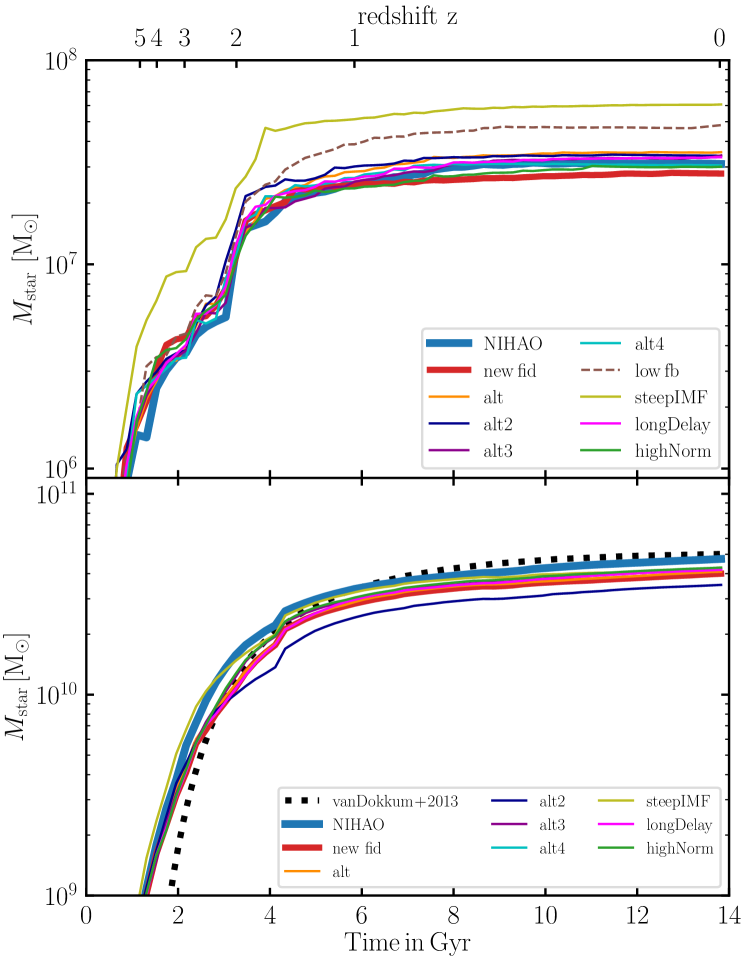
يوضح الشكل 12 تاريخ النمو الكتلي التراكمي للمجرة القزمة g2.83e10 (اللوحة العلوية) والمجرة الكتلية MW g8.26e11 (اللوحة السفلية) لجميع مجموعات المردودات التي تمت دراستها في هذا العمل. بالنسبة للمجرة القزمة، يؤدي كل من low fb وsteepIMF إلى نمو كتلة أقوى في الكون المبكر بسبب التغذية الراجعة الأقل. لا يظهر هذا التأثير كثيرًا في النموذج الشامل MW.
Appendix B دالة توزيع الفلزية
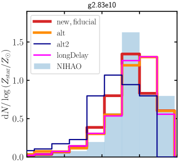
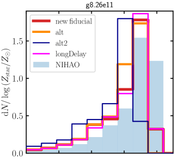
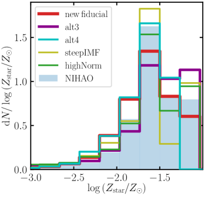
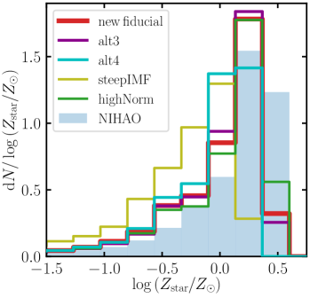
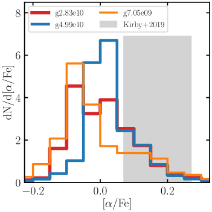
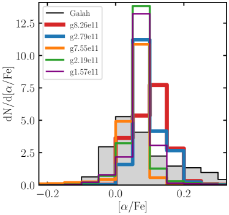
يوضح الشكل 13 دوال توزيع إجمالي المعادن النجمية للمجرة القزمة g2.83e10 (اللوحات اليسرى) والمجرة ذات كتلة MW g8.26e11 (اللوحات اليمنى) لمختلف الأشكال المختلفة مجموعات المردود اختبارها في هذا العمل. يوضح الشكل 15 و16 دوال التوزيع الإضافية للعناصر O وMg وSi وC.
يوضح الشكل 14 دالة توزيع العنصر لنموذجنا المرجعي الذي يقارن جميع المجرات النموذجية. تُظهر اللوحة اليسرى المجرات القزمة الثلاثة بينما تُظهر اللوحة اليمنى المجرات الأكثر ضخامة بما في ذلك مجرات L⋆ الثلاث (g2.79e12، g8.26e11، g7.55e11). تُظهر اللوحة اليسرى الاعتماد المتوقع لمتوسط تعزيز على الكتلة النجمية للمجرات القزمة حيث تُظهر المجرات الأكثر ضخامة (g4.99e10) تعزيزًا أكبر لـ . العرض الإجمالي للتوزيع مستقل إلى حد ما عن الكتلة النجمية. من ناحية أخرى، فإن المجرات الأكثر ضخامة لا تظهر مثل هذا الاعتماد على متوسط تعزيز على الكتلة النجمية ولكنها تظهر مؤشرات على أن عرض التوزيع يبدو أوسع بالنسبة للمجرات الأكثر ضخامة (g2.79e12, g8.26e11).
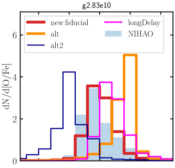
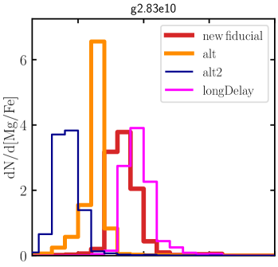
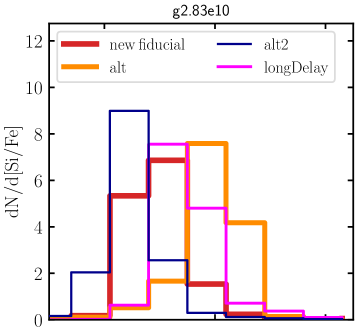
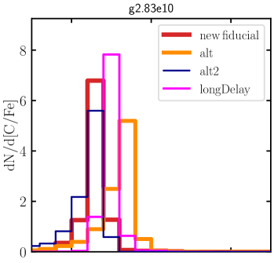
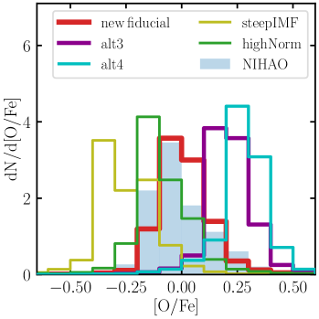
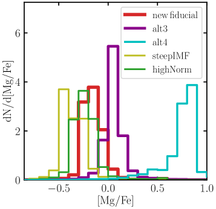
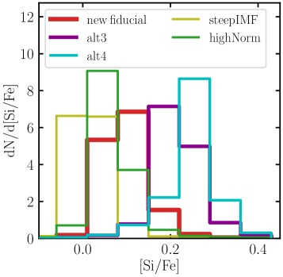
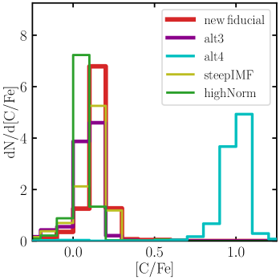
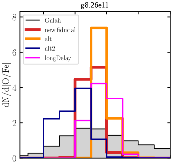
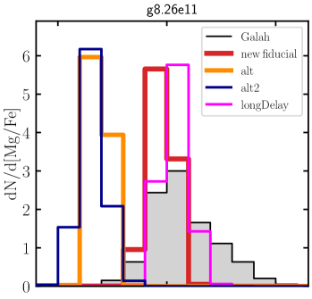
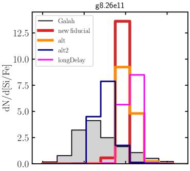
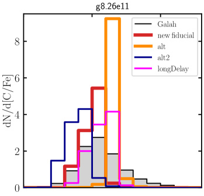
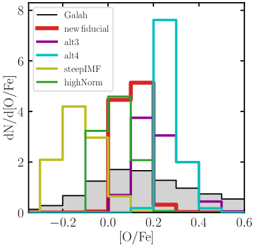
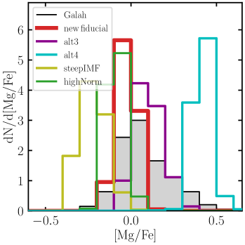
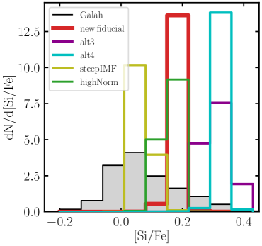
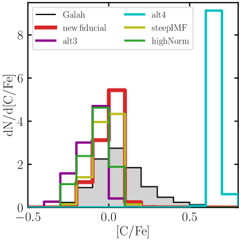
Appendix C مردودات إضافية لـ CC SN
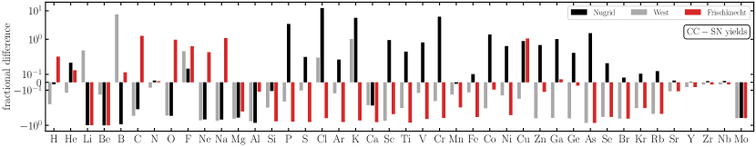